本页整理自Capstone 香港《馬拉開波 中文版》商品页提供的线上规则说明书 PDF——《Maracaibo》官方繁体中文规则书（Alexander Pfister 设计，Game's Up! / dlp games 出版，繁体中文翻译/校稿：Gazza.Liu、James Wu，平面设计：Gru.Tsow，中文翻译文字与排版归艾賜魔袋台灣有限公司所有，全书 24 页），逐页全文转录并转写为简体，原书页面随文嵌入——点击任意图片即可放大查看。规则内容归版权方所有，转录仅供个人学习查阅。
整理说明：全文按官方繁体版逐页视觉转录、全量图文复核后机械转写为简体，官译用语照录（达布隆=doubloon、简=单人模式对手、协作指示物=synergy token 等）。原书排印问题均照录并加〔原文如此〕：P.2「B类卡牌：故事卡牌……」并列分句间印冒号（疑应为分号）、步骤⑥印作「6*」（与「*注意」框呼应）；P.5 步骤「1.」后无空格而「2.」后有；P.6「将影响力记录条上，你该在战斗国家的标记往右移动一格」句式生硬、「部分战斗指示物顶部有额外的战斗修正，影响国家的战斗值」句疑未完；P.7「所有在之后越过这些分界线探索者的其他玩家」疑漏「的」；P.11 乘号印作字母「x」（3 处）；P.12「插入自己的船只板块」与他处「船只面板」用词不一、「花费了至少2-4点移动点数」；P.14「例子：」与他处「范例：」用词不一、「将任何超出的达布隆收入都会转换为」疑衍「将」；P.17 传承板块两条标点全半角不一；P.18「简的影响力标记计分如同玩家一样计算」语义重复、「使用有#MaracaiboGame」的「有」字突兀；P.19「战斗值」「战斗国家」与他处「战斗点数」术语不一；P.20「从你的船只移除一枚圆片」漏「面板」；P.23「花费过至少4点移动点数」语序疑误；P.24 L9 段「玩家便有了 一个新的」衍空格。原书手写体「将」字形似简体，系该字体对「爿」旁的写法（P.13/P.14 已核）。P.2 版图照片上的棕色序号圆标「15」为原版规则书编号残留，本页步骤仅 ①–⑨。〔图 …〕说明与个别小节标题为整理所拟。
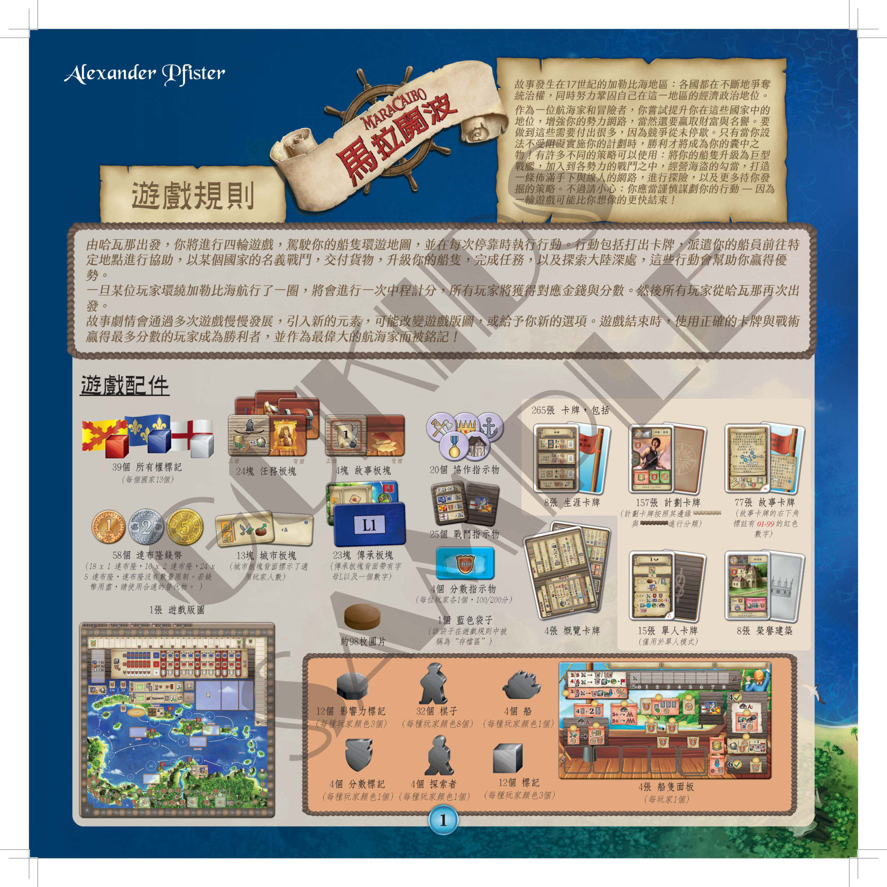
Alexander Pfister
MARACAIBO 马拉开波
故事发生在17世纪的加勒比海地区：各国都在不断地争夺统治权，同时努力巩固自己在这一地区的经济政治地位。作为一位航海家和冒险者，你尝试提升你在这些国家中的地位，增强你的势力网路，当然还要赢取财富与名誉。要做到这些需要付出很多，因为竞争从未停歇。只有当你设法不受阻碍实施你的计划时，胜利才将成为你的囊中之物！有许多不同的策略可以使用：将你的船只升级为巨型战舰，加入到各势力的战斗之中，经营海盗的勾当，打造一条布满手下与线人的网路，进行探险，以及更多待你发掘的策略。不过请小心：你应当谨慎谋划你的行动 — 因为一轮游戏可能比你想像的更快结束！
由哈瓦那出发，你将进行四轮游戏，驾驶你的船只环游地图，并在每次停靠时执行行动。行动包括打出卡牌，派遣你的船员前往特定地点进行协助，以某个国家的名义战斗，交付货物，升级你的船只，完成任务，以及探索大陆深处，这些行动会帮助你赢得优势。
一旦某位玩家环绕加勒比海航行了一圈，将会进行一次中程计分，所有玩家将获得对应金钱与分数。然后所有玩家从哈瓦那再次出发。
故事剧情会通过多次游戏慢慢发展，引入新的元素，可能改变游戏版图，或给予你新的选项。游戏结束时，使用正确的卡牌与战术赢得最多分数的玩家成为胜利者，并作为最伟大的航海家而被铭记！
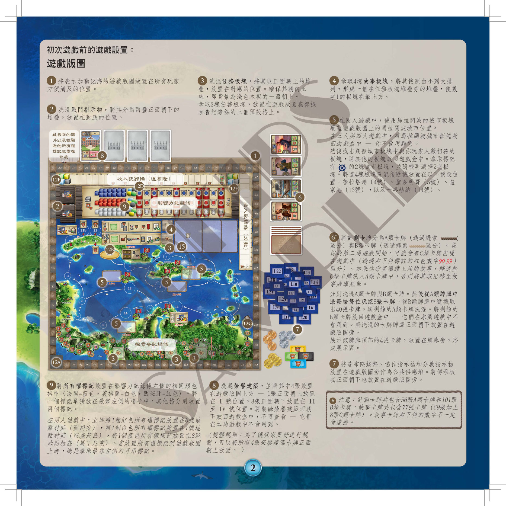
① 将表示加勒比海的游戏版图放置在所有玩家方便触及的位置。
② 洗混战斗指示物，将其分为两叠正面朝下的堆叠，放置在对应的位置。
③ 洗混任务板块，将其以正面朝上的堆叠，放置在对应的位置。确保其朝向正确，即背景为浅色木板的一面朝上。拿取3块任务板块，放置在游戏版图底部探索者记录条的三个预设格上。
④ 拿取4块故事板块，将其按照由小到大排列，形成一个在任务板块堆叠旁的堆叠，使数字1的板块在最上方。
⑤ 在两人游戏中，使用马拉开波的城市板块覆盖游戏版图上的马拉开波城市位置。在三人与四人游戏中，将马拉开波城市板块放回游戏盒中 — 你不会用到它。然后找出剩余城市板块中与你玩家人数相符的板块，将其他的板块放回游戏盒中。拿取标记有〔图 船舵图示〕的2块城市板块，并随机再选择2块板块。将这4块板块洗混后随机放置在以下预设位置：普拉塔港（4号）、圣多明哥（5号）、皇家港（13号），以及卡塔赫纳（14号）。
⑥* 将计划卡牌分为A类卡牌（透过绳索〔图 深色绳索图示〕区分）与B类卡牌（透过绳索〔图 浅色绳索图示〕区分）。从你的第二局游戏开始，可能会有C类卡牌出现在游戏中（透过右下角标注的红色数字 90-99 区分）。如果你希望继续上局的故事，将这些C类卡牌洗入A类卡牌中，否则将其取出移至故事牌库底部。
分别洗混A类卡牌与B类卡牌。然后从A类牌库中派发给每位玩家8张卡牌。从B类牌库中随机取出40张卡牌，与剩余的A类卡牌洗混。将剩余的B类卡牌放回游戏盒中 — 它们在本局游戏中不会被用到。将洗混的卡牌牌库正面朝下放置在游戏版图旁。展示该牌库顶部的4张卡牌，放置在牌库旁，形成展示区。
⑦ 将达布隆钱币、协作指示物和分数指示物放置在游戏版图旁作为公共供应堆。将传承板块正面朝下也放置在游戏版图旁。
〔图 摆好配件的加勒比海版图大幅照片。照片上方为1张正面朝上的建筑卡与3张卡背朝上的卡牌，旁有棕色序号「8」圆标；版图上叠有多枚棕色序号圆标（1、2、3、4、5、9、15等）；版图上缘深色分数轨印有 21-31 数字段（向右延续 32-51、52-62），其下浅色内轨标注「收入记录条（达布隆）」，可见 9-15 与 28-34 数字段；中央供应区标注「影响力记录条」；下方南美海岸标注「探索者记录条」；右侧竖排标注「收入记录条（分数）」，旁印 52-62 数字；左上白色说明框印有「被移除的圆片以及被驱逐的所有权标记放置在此处」；海图上另有白色编号圆圈（1-20 地点）与 20、21a、21b、22 等版图印刷数字，版面各角印有 12A、12B、12C、12D、12F 等制版小字〕
⑧ 洗混荣誉建筑，并将其中4张放置在游戏版图上方 — 1张正面朝上放置在 I 号位置，3张正面朝下放置在 II 至 IV 号位置。将剩余荣誉建筑面朝下放回游戏盒中，不可查看 — 它们在本局游戏中不会用到。
（变体规则：为了让玩家更好进行规划，可以将所有4张荣誉建筑卡牌正面朝上放置。）
⑨ 将所有权标记放置在影响力记录条左侧的相同颜色格中（法国=蓝色，英格兰=白色，西班牙=红色）。将一个标记单独放在最靠左侧的格子中，其他格分别放置两个标记。
在两人游戏中，立即将1个红色所有权标记放置在6号地点村庄（圣胡安），将1个白色所有权标记放置在7号地点村庄（圣基茨岛），将1个蓝色所有权标记放置在8号地点村庄（马丁尼克）。当放置所有权标记到游戏版图上时，总是拿取最靠左侧的可用标记。
*注意：计划卡牌共包含56张A类卡牌和101张B类卡牌：故事卡牌共包含77张卡牌（69张加上8张C类卡牌）。故事卡牌右下角的数字不一定会连号。〔原文如此：此处“B类卡牌”后用冒号“：”连接两个并列分句，疑应为分号〕
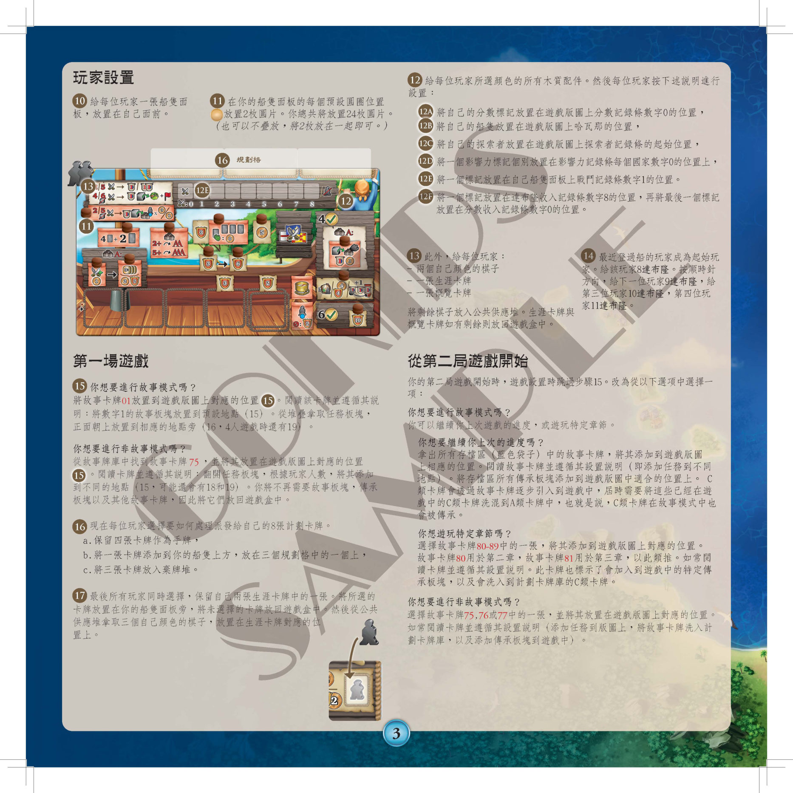
⑩ 给每位玩家一张船只面板，放置在自己面前。
⑪ 在你的船只面板的每个预设圆圈位置（圆片图示）放置2枚圆片。你总共将放置24枚圆片。（也可以不叠放，将2枚放在一起即可。）
〔图 船只面板照片，板上印有标记：⑯ 规划格、⑬、⑪、⑫E、⑫、4✓、6✓〕
⑫ 给每位玩家所选颜色的所有木质配件。然后每位玩家按下述说明进行设置：
⑫A 将自己的分数标记放置在游戏版图上分数记录条数字0的位置，
⑫B 将自己的船只放置在游戏版图上哈瓦那的位置，
⑫C 将自己的探索者放置在游戏版图上探索者记录条的起始位置，
⑫D 将一个影响力标记个别放置在影响力记录条每个国家数字0的位置上，
⑫E 将一个标记放置在自己船只面板上战斗记录条数字1的位置。
⑫F 将一个标记放置在达布隆收入记录条数字8的位置，再将最后一个标记放置在分数收入记录条数字0的位置。
⑬ 此外，给每位玩家：
将剩余棋子放入公共供应堆。生涯卡牌与概览卡牌如有剩余则放回游戏盒中。
⑭ 最近登过船的玩家成为起始玩家。给该玩家8达布隆。按顺时针方向，给下一位玩家9达布隆，给第三位玩家10达布隆，第四位玩家11达布隆。
⑮ 你想要进行故事模式吗？
将故事卡牌01放置到游戏版图上对应的位置⑮。阅读该卡牌并遵循其说明：将数字1的故事板块放置到预设地点（15）。从堆叠拿取任务板块，正面朝上放置到相应的地点旁（16，4人游戏时还有19）。
你想要进行非故事模式吗？
从故事牌库中找到故事卡牌75，并将其放置在游戏版图上对应的位置⑮。阅读卡牌并遵循其说明：翻开任务板块，根据玩家人数，将其添加到不同的地点（15，可能还会有18和19）。你将不再需要故事板块，传承板块以及其他故事卡牌，因此将它们放回游戏盒中。
⑯ 现在每位玩家选择要如何处理派发给自己的8张计划卡牌。
⑰ 最后所有玩家同时选择，保留自己两张生涯卡牌中的一张。将所选的卡牌放置在你的船只面板旁，将未选择的卡牌放回游戏盒中。然后从公共供应堆拿取三个自己颜色的棋子，放置在生涯卡牌对应的位置上。
〔图 生涯卡牌局部照片，箭头指示一枚棋子放到印有数字2的圆形位置上〕
你的第二局游戏开始时，游戏设置时跳过步骤15。改为从以下选项中选择一项：
你想要进行故事模式吗？
你可以继续你上次游戏的进度，或游玩特定章节。
你想要继续你上次的进度吗？
拿出所有存档区（蓝色袋子）中的故事卡牌，将其添加到游戏版图上相应的位置。阅读故事卡牌并遵循其设置说明（即添加任务到不同地点）。将存档区所有传承板块添加到游戏版图中适合的位置上。C类卡牌会透过故事卡牌逐步引入到游戏中，届时需要将这些已经在游戏中的C类卡牌洗混到A类卡牌中，也就是说，C类卡牌在故事模式中也会被传承。
你想游玩特定章节吗？
选择故事卡牌80-89中的一张，将其添加到游戏版图上对应的位置。故事卡牌80用于第二章，故事卡牌81用于第三章，以此类推。如常阅读卡牌并遵循其设置说明。此卡牌也标示了会加入到游戏中的特定传承板块，以及会洗入到计划卡牌库的C类卡牌。
你想要进行非故事模式吗？
选择故事卡牌75,76或77中的一张，并将其放置在游戏版图上对应的位置。如常阅读卡牌并遵循其设置说明（添加任务到版图上，将故事卡牌洗入计划卡牌库，以及添加传承板块到游戏中）。
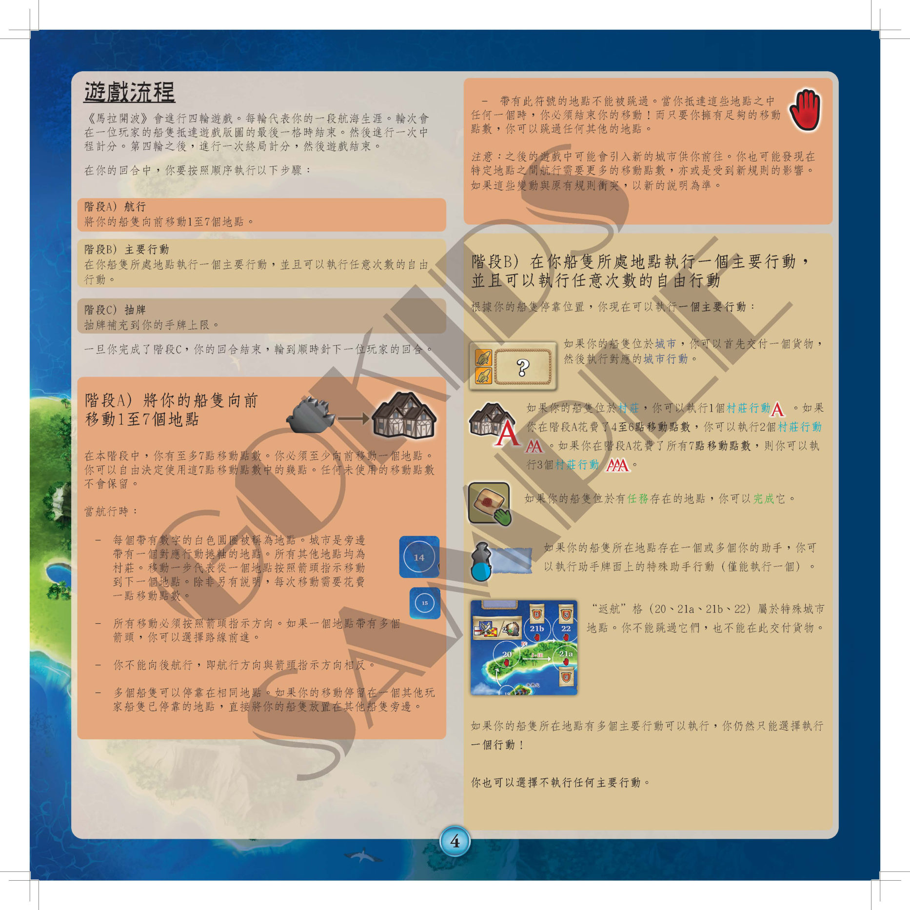
《马拉开波》会进行四轮游戏。每轮代表你的一段航海生涯。轮次会在一位玩家的船只抵达游戏版图的最后一格时结束。然后进行一次中程计分。第四轮之后，进行一次终局计分，然后游戏结束。
在你的回合中，你要按照顺序执行以下步骤：
将你的船只向前移动1至7个地点。
在你船只所处地点执行一个主要行动，并且可以执行任意次数的自由行动。
抽牌补充到你的手牌上限。
一旦你完成了阶段C，你的回合结束，轮到顺时针下一位玩家的回合。
〔图 船只图示指向村庄房屋图示的示意图〕
在本阶段中，你有至多7点移动点数。你必须至少向前移动一个地点。你可以自由决定使用这7点移动点数中的几点。任何未使用的移动点数不会保留。
当航行时：
〔图 两个蓝色圆圈地点标记示例，内有数字14与15〕
〔图 红色手掌符号〕
注意：之后的游戏中可能会引入新的城市供你前往。你也可能发现在特定地点之间航行需要更多的移动点数，亦或是受到新规则的影响。如果这些变动与原有规则冲突，以新的说明为准。
根据你的船只停靠位置，你现在可以执行一个主要行动：
〔图 城市行动板块示意图，有两个货物图示与问号卷轴〕 如果你的船只位于城市，你可以首先交付一个货物，然后执行对应的城市行动。
〔图 村庄房屋图示，旁有红色字母A〕 如果你的船只位于村庄，你可以执行1个村庄行动A。如果你在阶段A花费了4至6点移动点数，你可以执行2个村庄行动AA。如果你在阶段A花费了所有7点移动点数，则你可以执行3个村庄行动AAA。
〔图 任务卡示意图，信封火漆印与绿色手掌〕 如果你的船只位于有任务存在的地点，你可以完成它。
〔图 助手圆盘与助手卡示意图〕 如果你的船只所在地点存在一个或多个你的助手，你可以执行助手牌面上的特殊助手行动（仅能执行一个）。
〔图 游戏版图局部照片，可见地点20、21a、21b、22与部分19，红色手掌符号，旗帜卷轴、「/2」与圆盘，数字8、5盾牌卷轴，箭头标注 I - III 与 IV；岛屿旁另有红色地名小字，无法辨认〕 “返航”格（20、21a、21b、22）属于特殊城市地点。你不能跳过它们，也不能在此交付货物。
如果你的船只所在地点有多个主要行动可以执行，你仍然只能选择执行一个行动！
你也可以选择不执行任何主要行动。
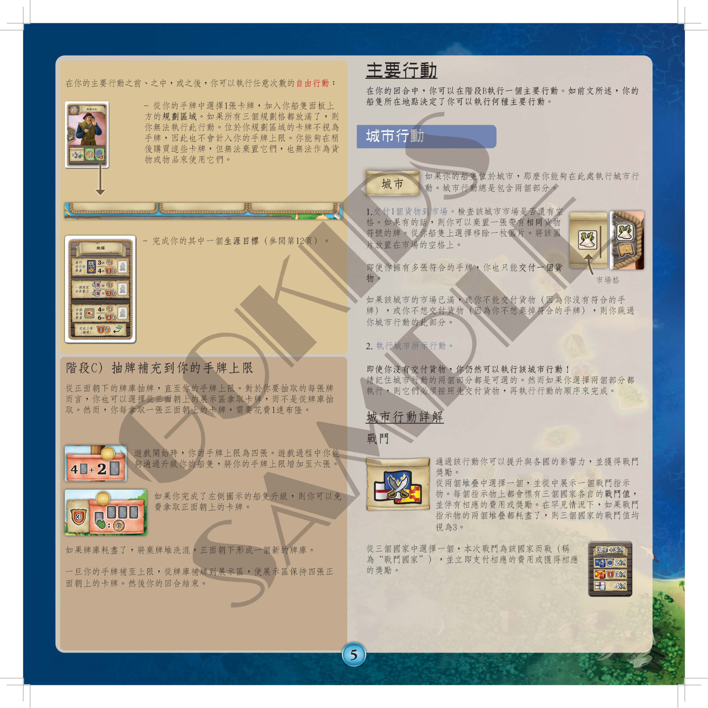
在你的主要行动之前、之中，或之后，你可以执行任意次数的自由行动：
〔图 一张人物卡牌，左上角数字12，牌名小字无法辨认〔?〕，牌面下方有三个图标：5（交叉剑与帆）、2（钱币）、2（紫底图标）；卡牌下方一支箭头指向船只面板横幅插图〕
〔图 船只面板横幅插图，三个空白规划格〕
〔图 「荣耀」卡牌，内容四行：战斗指示物数量 3＝2、4＝2 2；一个国家的影响力 6＝3、9＝3 3；任务数量 4＝4、6＝4 4；完成三项（翻牌）2 2，行末有绿色计数符号与箭头〕
从正面朝下的牌库抽牌，直至你的手牌上限。对于你要抽取的每张牌而言，你也可以选择从正面朝上的展示区拿取卡牌，而不是从牌库抽取。然而，你每拿取一张正面朝上的卡牌，需要花费1达布隆。
〔图 船只升级横幅，显示「4 + 2」〕
游戏开始时，你的手牌上限为四张。游戏过程中你能够通过升级你的船只，将你的手牌上限增加至六张。
〔图 船只升级横幅照片：盾牌数字3、卡牌格、手形图标、冒号与钱币数字0〕
如果你完成了左侧图示的船只升级，则你可以免费拿取正面朝上的卡牌。
如果牌库耗尽了，将弃牌堆洗混，正面朝下形成一个新的牌库。
一旦你的手牌补至上限，从牌库补牌到展示区，使展示区保持四张正面朝上的卡牌。然后你的回合结束。
在你的回合中，你可以在阶段B执行一个主要行动。如前文所述，你的船只所在地点决定了你可以执行何种主要行动。
〔图 横幅图标，上书「城市」〕
如果你的船只位于城市，那么你能够在此处执行城市行动。城市行动总是包含两个部分。
1.交付1个货物到市场。检查该城市市场是否还有空格。如果有的话，则你可以弃置一张带有相同货物符号的牌。从你船只上选择移除一枚圆片。将该圆片放置在市场的空格上。
即使你拥有多张符合的手牌，你也只能交付一个货物。
〔图 市场格照片：一张货物图标牌与市场板块，箭头指向市场空格，图下标注「市场格」〕
如果该城市的市场已满，或你不能交付货物（因为你没有符合的手牌），或你不想交付货物（因为你不想弃掉符合的手牌），则你跳过你城市行动的此部分。
2. 执行城市所示行动。
即使你没有交付货物，你仍然可以执行该城市行动！请记住城市行动的两个部分都是可选的。然而如果你选择两个部分都执行，则它们必须按照先交付货物，再执行行动的顺序来完成。
〔图 画有三国旗帜与交叉佩剑的卷轴图标〕
通过该行动你可以提升与各国的影响力，并获得战斗奖励。从两个堆叠中选择一个，并从中展示一个战斗指示物。每个指示物上都会标有三个国家各自的战斗值，并伴有相应的费用或奖励。在罕见情况下，如果战斗指示物的两个堆叠都耗尽了，则三个国家的战斗值均视为3。
从三个国家中选择一个，本次战斗为该国家而战（称为“战斗国家”），并立即支付相应的费用或获得相应的奖励。
〔图 木牌战斗值表：3□＋3把剑；蓝旗、蓝盾、2把剑；红黄旗、红盾1、3把剑；英格兰旗、4把剑〕
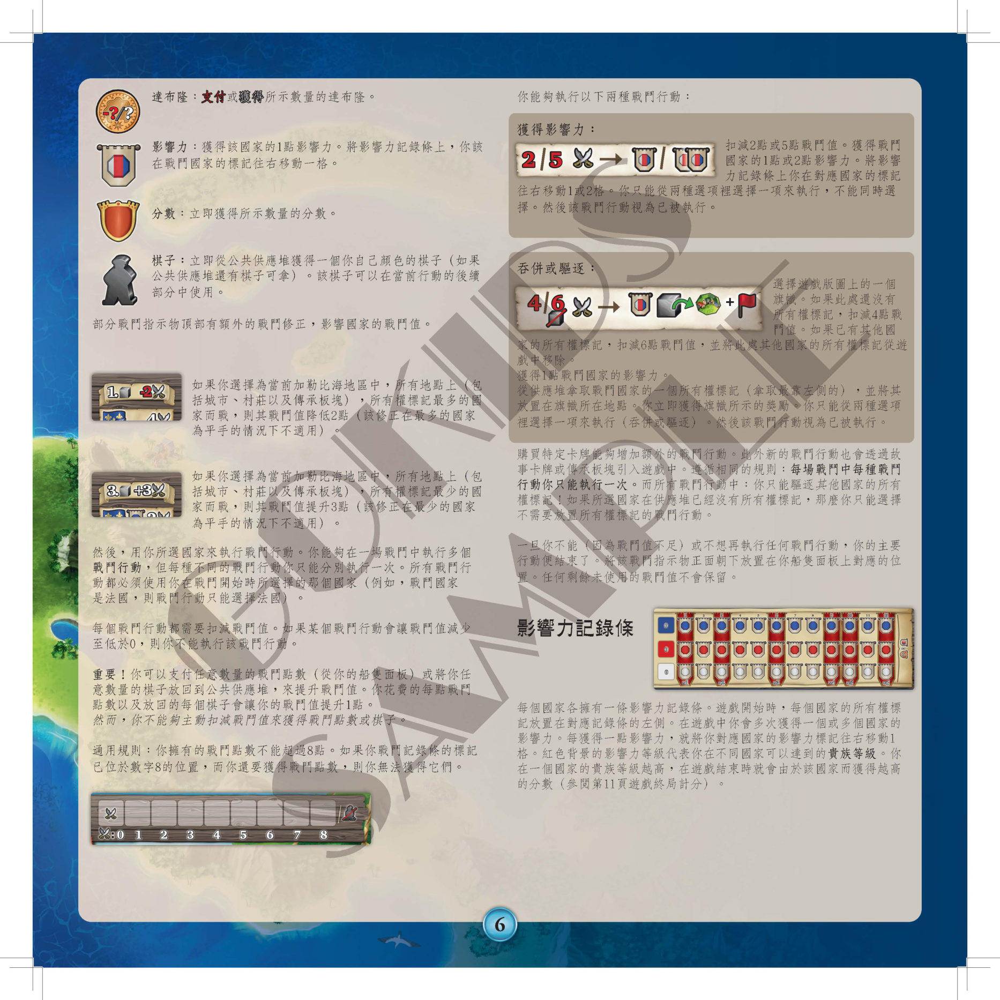
〔图 金色钱币图标，币面有「-?/?」字样〕达布隆：支付或获得所示数量的达布隆。
〔图 米白色垂旗内嵌蓝白红三色八角徽记的旗帜图标〕影响力：获得该国家的1点影响力。将影响力记录条上，你该在战斗国家的标记往右移动一格。
〔图 红色盾牌图标〕分数：立即获得所示数量的分数。
〔图 灰色棋子（米宝）图标〕棋子：立即从公共供应堆获得一个你自己颜色的棋子（如果公共供应堆还有棋子可拿）。该棋子可以在当前行动的后续部分中使用。
部分战斗指示物顶部有额外的战斗修正，影响国家的战斗值。
〔图 战斗指示物照片，顶部横幅为「1. ▢ －2把剑」（红字－2），下方横幅为法国旗与「4把剑」〕
如果你选择为当前加勒比海地区中，所有地点上（包括城市、村庄以及传承板块），所有权标记最多的国家而战，则其战斗值降低2点（该修正在最多的国家为平手的情况下不适用）。
〔图 战斗指示物照片，顶部横幅为「3. ▢ ＋3把剑」，下方横幅为法国旗等旗帜与「2把剑」〕
如果你选择为当前加勒比海地区中，所有地点上（包括城市、村庄以及传承板块），所有权标记最少的国家而战，则其战斗值提升3点（该修正在最少的国家为平手的情况下不适用）。
然后，用你所选国家来执行战斗行动。你能够在一场战斗中执行多个战斗行动，但每种不同的战斗行动你只能分别执行一次。所有战斗行动都必须使用你在战斗开始时所选择的那个国家（例如，战斗国家是法国，则战斗行动只能选择法国）。
每个战斗行动都需要扣减战斗值。如果某个战斗行动会让战斗值减少至低于0，则你不能执行该战斗行动。
重要！你可以支付任意数量的战斗点数（从你的船只面板），或将你任意数量的棋子放回到公共供应堆，来提升战斗值。你花费的每点战斗点数以及放回的每个棋子会让你的战斗值提升1点。然而，你不能够主动扣减战斗值来获得战斗点数或棋子。
通用规则：你拥有的战斗点数不能超过8点。如果你战斗记录条的标记已位于数字8的位置，而你还要获得战斗点数，则你无法获得它们。
〔图 战斗记录条照片：左端交叉剑图标与「剑：0」，刻度数字0 1 2 3 4 5 6 7 8，右端有一个被红线划掉的棋子图案〕
你能够执行以下两种战斗行动：
〔图 横幅示意「2/5 把剑 → 一面旗帜／两面旗帜」〕
扣减2点或5点战斗值。获得战斗国家的1点或2点影响力。将影响力记录条上你在对应国家的标记往右移动1或2格。你只能从两种选项里选择一项来执行，不能同时选择。然后该战斗行动视为已被执行。
〔图 横幅示意「4/6把剑 → 旗帜；灰色方块经绿色箭头变为传承板块；＋红旗」，数字下方有一个被划掉的灰色方块〕
选择游戏版图上的一个旗帜。如果此处还没有所有权标记，扣减4点战斗值。如果已有其他国家的所有权标记，扣减6点战斗值，并将此处其他国家的所有权标记从游戏中移除。获得1点战斗国家的影响力。从供应堆拿取战斗国家的一个所有权标记（拿取最靠左侧的），并将其放置在旗帜所在地点。你立即获得旗帜所示的奖励。你只能从两种选项里选择一项来执行（吞并或驱逐）。然后该战斗行动视为已被执行。
购买特定卡牌能够增加额外的战斗行动。此外新的战斗行动也会透过故事卡牌或传承板块引入游戏中。遵循相同的规则：每场战斗中每种战斗行动你只能执行一次。而所有战斗行动中：你只能驱逐其他国家的所有权标记！如果所选国家在供应堆已经没有所有权标记，那么你只能选择不需要放置所有权标记的战斗行动。
一旦你不能（因为战斗值不足）或不想再执行任何战斗行动，你的主要行动便结束了。将该战斗指示物正面朝下放置在你船只面板上对应的位置。任何剩余未使用的战斗值不会保留。
〔图 影响力记录条照片：三行旗帜格（蓝、红、白三色八角标记），左端各有一个「0」标记，顶端数字1至12，第1、3、6、9、10、12格为红色背景并在下方标注x1至x6〕
每个国家各拥有一条影响力记录条。游戏开始时，每个国家的所有权标记放置在对应记录条的左侧。在游戏中你会多次获得一个或多个国家的影响力。每获得一点影响力，就将你对应国家的影响力标记往右移动1格。红色背景的影响力等级代表你在不同国家可以达到的贵族等级。你在一个国家的贵族等级越高，在游戏结束时就会由于该国家而获得越高的分数（参阅第11页游戏终局计分）。
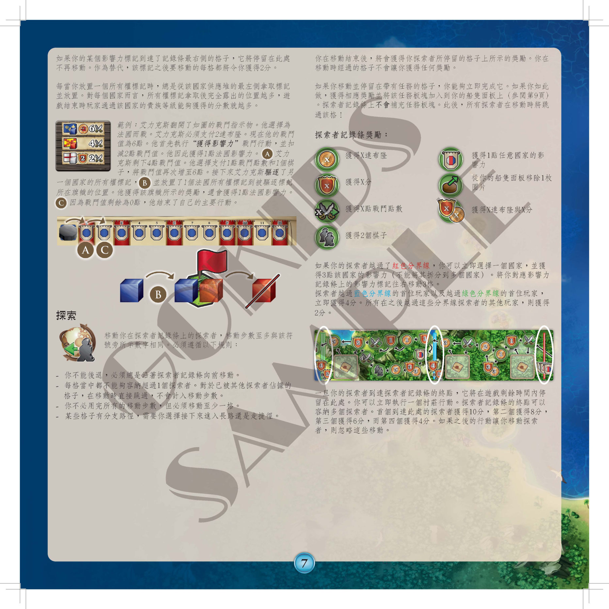
如果你的某个影响力标记到达了记录条最右侧的格子，它将停留在此处不再移动。作为替代，该标记之后要移动的每格都将令你获得2分。
每当你放置一个所有权标记时，总是从该国家供应堆的最左侧拿取标记并放置。对每个国家而言，所有权标记拿取后完全露出的位置越多，游戏结束时玩家通过该国家的贵族等级能够获得的分数就越多。
〔图 三张战斗指示物照片，旗帜旁分别印有「-2 6⚔」「4⚔」「2 2⚔」的数字标签〕
范例：艾力克斯翻开了如图的战斗指示物。他选择为法国而战。艾力克斯必须支付2达布隆。现在他的战斗值为6点。他首先执行“获得影响力”战斗行动，并扣减2点战斗值。他因此获得1点法国影响力。Ⓐ 艾力克斯剩下4点战斗值。他选择支付1点战斗点数和1个棋子，将战斗值再次增至6点。接下来艾力克斯驱逐了另一个国家的所有权标记，Ⓑ 并放置了1个法国所有权标记到被驱逐标记所在旗帜的位置。他获得该旗帜所示的奖励，还会获得1点法国影响力。Ⓒ 因为战斗值剩余为0点，他结束了自己的主要行动。
〔图 影响力记录条照片，旗帜格依序编号1至12，一枚黑色八角棋子停在记录条左端，旁有ⒶⒸ标记〕
〔图 示意照片——一枚蓝色棋子经Ⓑ标记移到插著红旗的绿色板块上、与一枚红色棋子并列，箭头再指向一个被斜线划掉的红色棋子〕
〔图 地球仪与黑色探索者棋子图标〕
移动你在探索者记录条上的探索者，移动步数至多与该符号旁所示数字相同。必须遵循以下规则：
你在移动结束后，将会获得你探索者所停留的格子上所示的奖励。你在移动时经过的格子不会让你获得任何奖励。
如果你移动并停留在带有任务的格子，你能够立即完成它。如果你如此做，获得相应奖励并将该任务板块加入到你的船只面板上（参阅第9页）。探索者记录条上不会补充任务板块。此后，所有探索者在移动时将跳过该格！
如果你的探索者越过了红色分界线，你可以立即选择一个国家，并获得3点该国家的影响力（不能将其拆分到多个国家）。将你对应影响力记录条上的影响力标记往右移动3格。
探索者越过蓝色分界线的首位玩家以及越过绿色分界线的首位玩家，立即获得4分。所有在之后越过这些分界线探索者的其他玩家，则获得2分。〔原文如此：疑漏一「的」字，按上下文应为「越过这些分界线的探索者」〕
〔图 探索者记录条实景照片，路径格上印有数字旗帜（可辨认5、2、1、1、1、3、2、1、4、5、3、3、4、2、1、3等）与交叉弯刀图标，路径旁放有任务板块，三处白圈分别标示绿色分界线、蓝色分界线与红色分界线〕
一旦你的探索者到达探索者记录条的终点，它将在游戏剩余时间内停留在此处。你可以立即执行一个村庄行动。探索者记录条的终点可以容纳多个探索者。首个到达此处的探索者获得10分，第二个获得8分，第三个获得6分，而第四个获得4分。如果之后的行动让你移动探索者，则忽略这些移动。
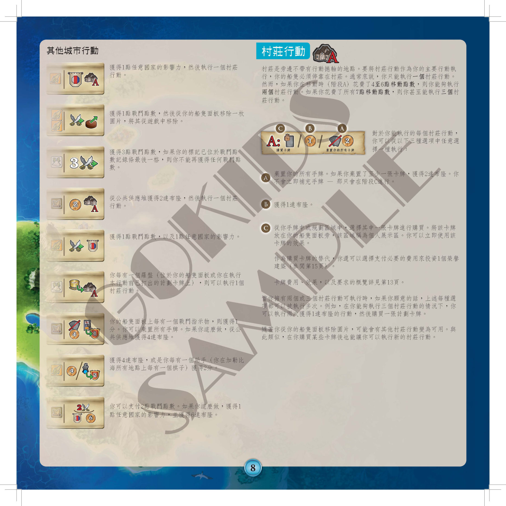
〔图 房屋图标，附红色字母A〕
村庄是旁边不带有行动卷轴的地点。要将村庄行动作为你的主要行动执行，你的船只必须停靠在村庄。通常来说，你只能执行一个村庄行动。然而，如果你在移动时（阶段A）花费了4至6点移动点数，则你能够执行两个村庄行动。如果你花费了所有7点移动点数，则你甚至能执行三个村庄行动。
〔图 村庄行动选项横幅照片——左起为Ⓒ「A:购买卡牌」（卡牌与金币图案）、斜线、Ⓑ（金币「1」）、斜线、Ⓐ「弃置你的所有卡牌」（被红斜线划掉的数张卡牌与金币「2」）〕
对于你能执行的每个村庄行动，你可以从以下三种选项中任意选择一种执行：
Ⓐ 弃置你的所有手牌。如果你弃置了至少一张卡牌，获得2达布隆。你不会立即补充手牌 — 那只会在阶段C进行。
Ⓑ 获得1达布隆。
Ⓒ 从你手牌中或规划区域中，选择其中一张卡牌进行购买。将该卡牌放在你的船只面板旁，该区域称为个人展示区。你可以立即使用该卡牌的效果。
作为购买卡牌的替代，你还可以选择支付必要的费用来投资1个荣誉建筑（参阅第15页）。
卡牌费用、效果，以及要求的概览详见第13页。
当你拥有两个或三个村庄行动可执行时，如果你愿意的话，上述每种选项都可以被执行多次。例如，在你能够执行三个村庄行动的情况下，你可以执行两次获得1达布隆的行动，然后购买一张计划卡牌。
随著你从你的船只面板移除圆片，可能会有其他村庄行动变为可用。与此类似，在你购买某些卡牌后也能让你可以执行新的村庄行动。
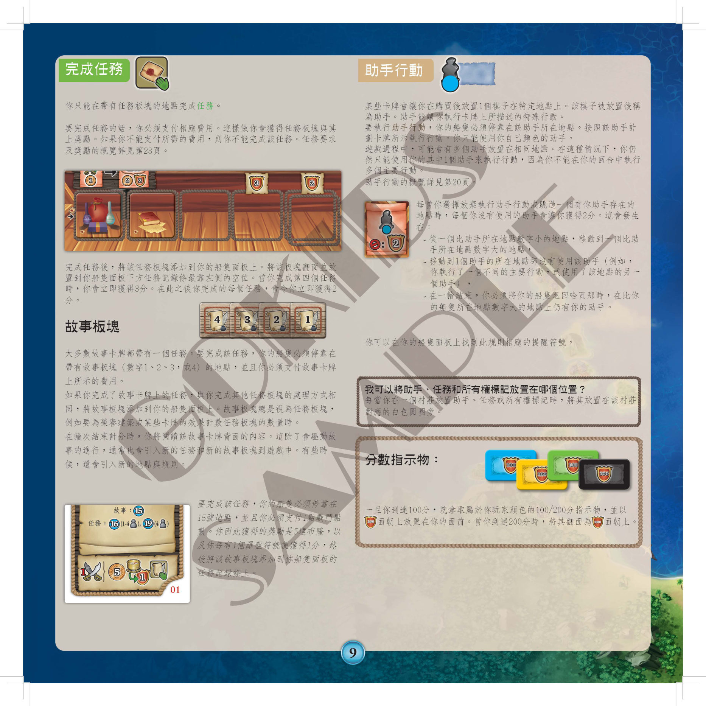
〔图 标题旁图标——带红色火漆印的信封与一只绿色手掌〕
你只能在带有任务板块的地点完成任务。
要完成任务的话，你必须支付相应费用。这样做你会获得任务板块与其上奖励。如果你不能支付所需的费用，则你不能完成该任务。任务要求及奖励的概览详见第23页。
〔图 船只面板「任务记录条」照片，共五个木格；横条上方自左至右标有圆圈数字「1」、钱币「2」、盾牌「2」，右侧两格上方各标盾牌「3」、盾牌「2」；最左格已放置任务板块，左侧有黑色箭头指示第一格〕
完成任务后，将该任务板块添加到你的船只面板上。将该板块翻面并放置到你船只面板下方任务记录条最靠左侧的空位。当你完成第四个任务时，你会立即获得3分。在此之后你完成的每个任务，会令你立即获得2分。
〔图 四枚故事板块照片，自左至右印有数字4、3、2、1，各配羽毛笔图示〕
大多数故事卡牌都带有一个任务。要完成该任务，你的船只必须停靠在带有故事板块（数字1、2、3，或4）的地点，并且你必须支付故事卡牌上所示的费用。
如果你完成了故事卡牌上的任务，与你完成其他任务板块的处理方式相同，将故事板块添加到你的船只面板上。故事板块总是视为任务板块，例如要为荣誉建筑或某些卡牌的效果计数任务板块的数量时。
在轮次结束计分时，你将阅读该故事卡牌背面的内容。这除了会驱动故事的进行，通常也会引入新的任务和新的故事板块到游戏中。有些时候，还会引入新的地点与规则。
〔图 一张故事卡牌照片：上栏印「故事：15」与「任务：16 (1-4〔人形图示〕), 19 (4〔人形图示〕）」；下栏印费用与奖励图示「1〔交叉弯刀〕｝5〔金币〕〔罗盘〕→1〔盾牌〕〔卷轴与绿色手掌〕」，右下角印红色编号「01」〕
要完成该任务，你的船只必须停靠在15号地点，并且你必须支付1点战斗点数。你因此获得的奖励是5达布隆，以及你每有1个罗盘符号便获得1分，然后将该故事板块添加到你船只面板的任务记录条上。
〔图 标题旁图标——灰色助手棋子（下压蓝色圆片）与一块蓝色碎布〕
某些卡牌会让你在购买后放置1个棋子在特定地点上。该棋子被放置后称为助手。助手能让你执行卡牌上所描述的特殊行动。
要执行助手行动，你的船只必须停靠在该助手所在地点。按照该助手计划卡牌所示执行行动。你只能使用你自己颜色的助手。
游戏过程中，可能会有多个助手放置在相同地点。在这种情况下，你仍然只能使用你的其中1个助手来执行行动，因为你不能在你的回合中执行多个主要行动。
助手行动的概览详见第20页。
〔图 提醒符号小图——助手棋子与蓝色圆片、红色禁止符号「∅」、冒号与盾牌「2」〕
每当你选择放弃执行助手行动或跳过一个有你助手存在的地点时，每个你没有使用的助手会让你获得2分。这会发生在：
你可以在你的船只面板上找到此规则相应的提醒符号。
我可以将助手、任务和所有权标记放置在哪个位置？
每当你在一个村庄放置助手、任务或所有权标记时，将其放置在该村庄对应的白色圆圈旁。
分数指示物：
〔图 四枚分数指示物照片（蓝、黄、绿、黑），每枚均印有红色盾牌「100」〕
一旦你到达100分，就拿取属于你玩家颜色的100/200分指示物，并以〔盾牌「100」图示〕面朝上放置在你的面前。当你到达200分时，将其翻面为〔盾牌「200」图示〕面朝上。
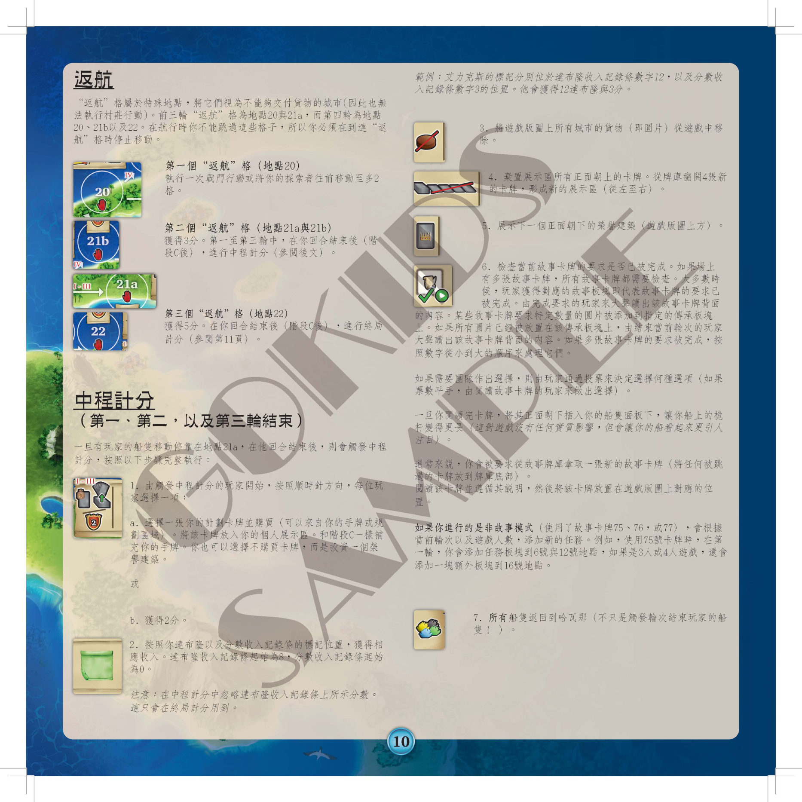
“返航”格属于特殊地点，将它们视为不能够交付货物的城市（因此也无法执行村庄行动）。前三轮“返航”格为地点20与21a，而第四轮为地点20、21b以及22。在航行时你不能跳过这些格子，所以你必须在到达“返航”格时停止移动。
〔图 游戏版图照片——地点20的圆形区域，白色圆圈内印「20」与红色手掌图示，右上角有「IV」旗标〕
执行一次战斗行动或将你的探索者往前移动至多2格。
〔图 游戏版图照片——地点21b的圆形区域，蓝色圆圈内印「21b」与红色手掌图示，左下角有「IV」旗标〕
获得3分。第一至第三轮中，在你回合结束后（阶段C后），进行中程计分（参阅后文）。
〔图 游戏版图照片——地点21a的圆形区域，白色圆圈内印「21a」与红色手掌图示，左侧有红色「I - III」箭头指向该圆圈〕
〔图 游戏版图照片——地点22的圆形区域，蓝色圆圈内印「22」与红色手掌图示，右下角有「I」旗标〕
获得5分。在你回合结束后（阶段C后），进行终局计分（参阅第11页）。
（第一、第二，以及第三轮结束）
一旦有玩家的船只移动停靠在地点21a，在他回合结束后，则会触发中程计分，按照以下步骤完整执行：
〔图 小图——红色「I - III」箭头、钱袋、一手卡牌与绿色向上箭头、盾牌「2」以及一把直尺〕
1. 由触发中程计分的玩家开始，按照顺时针方向，每位玩家选择一项：
a. 选择一张你的计划卡牌并购买（可以来自你的手牌或规划区域）。将该卡牌放入你的个人展示区。和阶段C一样补充你的手牌。你也可以选择不购买卡牌，而是投资一个荣誉建筑。
或
b. 获得2分。
〔图 绿色卷起的帆布（船帆升级代件）图示〕
2. 按照你达布隆以及分数收入记录条的标记位置，获得相应收入。达布隆收入记录条起始为8，分数收入记录条起始为0。
注意：在中程计分中忽略达布隆收入记录条上所示分数。这只会在终局计分用到。
范例：艾力克斯的标记分别位于达布隆收入记录条数字12，以及分数收入记录条数字3的位置。他会获得12达布隆与3分。
〔图 小图标——棕色货物圆片上画红色斜线〕
3. 将游戏版图上所有城市的货物（即圆片）从游戏中移除。
〔图 小图标——四张卡牌背面横排，其上画红色斜线〕
4. 弃置展示区所有正面朝上的卡牌。从牌库翻开4张新的卡牌，形成新的展示区（从左至右）。
〔图 小图标——一张卡牌背面，中央印金色皇冠〕
5. 展示下一个正面朝下的荣誉建筑（游戏版图上方）。
〔图 小图标——故事卡牌与绿色勾选、绿色前进箭头〕
6. 检查当前故事卡牌的要求是否已被完成。如果场上有多张故事卡牌，所有故事卡牌都需要检查。大多数时候，玩家获得对应的故事板块即代表故事卡牌的要求已被完成。由完成要求的玩家来大声读出该故事卡牌背面的内容。某些故事卡牌要求特定数量的圆片被添加到指定的传承板块上。如果所有圆片已经被放置在该传承板块上，由结束当前轮次的玩家大声读出该故事卡牌背面的内容。如果多张故事卡牌的要求被完成，按照数字从小到大的顺序来处理它们。
如果需要团队作出选择，则由玩家通过投票来决定选择何种选项（如果票数平手，由阅读故事卡牌的玩家来做出选择）。
一旦你阅读完卡牌，将其正面朝下插入你的船只面板下，让你船上的桅杆变得更长（这对游戏没有任何实质影响，但会让你的船看起来更引人注目）。
通常来说，你会被要求从故事牌库拿取一张新的故事卡牌（将任何被跳过的卡牌放到牌库底部）。
阅读该卡牌并遵循其说明，然后将该卡牌放置在游戏版图上对应的位置。
如果你进行的是非故事模式（使用了故事卡牌75、76，或77），会根据当前轮次以及游戏人数，添加新的任务。例如，使用75号卡牌时，在第一轮，你会添加任务板块到6号与12号地点，如果是3人或4人游戏，还会添加一块额外板块到16号地点。
〔图 小图标——蓝、黄、绿、黑四色手掌叠在一起〕
7. 所有船只返回到哈瓦那（不只是触发轮次结束玩家的船只！）。
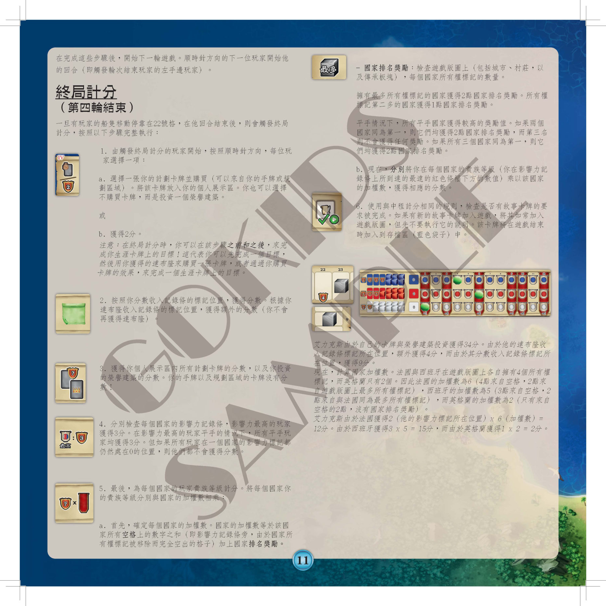
在完成这些步骤后，开始下一轮游戏。顺时针方向的下一位玩家开始他的回合（即触发轮次结束玩家的左手边玩家）。
（第四轮结束）
一旦有玩家的船只移动停靠在22号格，在他回合结束后，则会触发终局计分，按照以下步骤完整执行：
〔图 生涯卡牌照片，左上角标「IV」，卡面含灰色卡牌与一枚红色盾牌标「2」〕
1. 由触发终局计分的玩家开始，按照顺时针方向，每位玩家选择一项：
a. 选择一张你的计划卡牌并购买（可以来自你的手牌或规划区域）。将该卡牌放入你的个人展示区。你也可以选择不购买卡牌，而是投资一个荣誉建筑。
或
b. 获得2分。
注意：在终局计分时，你可以在该步骤之前和之后，来完成你生涯卡牌上的目标！这代表你可以先完成一个目标，然后用你获得的达布隆来购买一张卡牌，或者通过你购买卡牌的效果，来完成一个生涯卡牌上的目标。
〔图 绿色布条（横幅）图标〕
2. 按照你分数收入记录条的标记位置，获得分数。根据你达布隆收入记录条的标记位置，获得额外的分数（你不会再获得达布隆）。
〔图 两张灰色卡牌图标，上有一枚印「?」的红色盾牌与一枚金色皇冠〕
3. 获得你个人展示区内所有计划卡牌的分数，以及你投资的荣誉建筑的分数。你的手牌以及规划区域的卡牌没有分数！
〔图 图标——印「最高」的小旗帜、冒号与一枚印「3」的红色盾牌〕
4. 分别检查每个国家的影响力记录条，影响力最高的玩家获得3分。在影响力最高的玩家平手的情况下，所有平手玩家均获得3分。但如果所有玩家在一个国家的影响力标记都仍然处在0的位置，则他们都不会获得分数。
〔图 图标——一枚印「?」的盾牌、字母「x」与一个红色条幅〕
5. 最后，为每个国家的玩家贵族等级计分。将每个国家你的贵族等级分别与国家的加权数相乘：
a. 首先，确定每个国家的加权数。国家的加权数等于该国家所有空格上的数字之和（即影响力记录条旁，由于国家所有权标记被移除而完全空出的格子）加上国家排名奖励。
〔图 黑色立方体图标，上印「最多」〕
拥有最多所有权标记的国家获得2点国家排名奖励。所有权标记第二多的国家获得1点国家排名奖励。
平手情况下，所有平手国家获得较高的奖励值。如果两个国家同为第一，则它们均获得2点国家排名奖励，而第三名则不会获得任何奖励。如果所有三个国家同为第一，则它们均获得2点国家排名奖励。
b. 现在，分别将你在每个国家的贵族等级（你在影响力记录条上所到达的最远的红色条幅下方的数值）乘以该国家的加权数，获得相应的分数。
〔图 故事卡牌图标，卡面上叠加绿色对勾与绿色播放键箭头〕
6. 使用与中程计分相同的规则，检查是否有故事卡牌的要求被完成。如果有新的故事卡牌加入游戏，将其如常加入游戏版图，但先不要执行它的说明。该卡牌将在游戏结束时加入到存档区（蓝色袋子）中。
〔图 版图局部照片——左侧为分数收入记录条末端（栏标「22」「23」，灰色方块位于23栏，另有一枚印「4」的盾牌标记）与达布隆收入记录条（灰色方块旁标「9」）；右侧为三国影响力轨道照片，上缘标数字1至12，起点处有蓝、红、白三个印「0」的方格，红色加成条幅位于第1、3、6、9、10、12格，其底部白色小字依序似为「×1〔?〕」「×2」「×3〔?〕」「×4」「×5」「×6」，各行起点盾牌标记上的小数字过小〔?〕难以辨认〕
艾力克斯由于自己的卡牌与荣誉建筑投资获得34分。由于他的达布隆收入记录条标记所在位置，额外获得4分，而由于其分数收入记录条标记所在位置，获得9分。
现在，计算国家加权数。法国与西班牙在游戏版图上各自拥有4个所有权标记，而英格兰只有2个。因此法国的加权数为6（4点来自空格，2点来自游戏版图上最多所有权标记），西班牙的加权数为5（3点来自空格，2点来自与法国同为最多所有权标记），而英格兰的加权数为2（只有来自空格的2点，没有国家排名奖励）。
艾力克斯由于法国获得2（他的影响力标记所在位置）x 6（加权数）= 12分〔原文如此：乘号印作字母「x」而非「×」〕。由于西班牙获得3 x 5 = 15分，而由于英格兰获得1 x 2 = 2分。
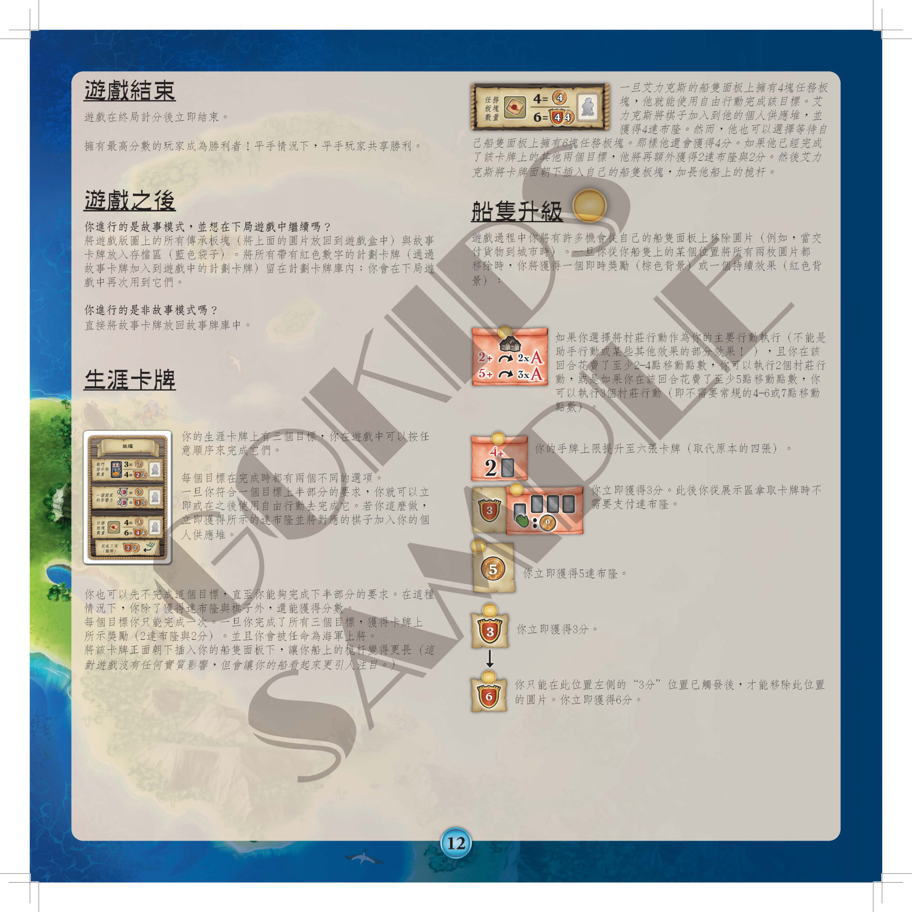
游戏在终局计分后立即结束。
拥有最高分数的玩家成为胜利者！平手情况下，平手玩家共享胜利。
你进行的是故事模式，并想在下局游戏中继续吗？
将游戏版图上的所有传承板块（将上面的圆片放回到游戏盒中）与故事卡牌放入存档区（蓝色袋子）。将所有带有红色数字的计划卡牌（通过故事卡牌加入到游戏中的计划卡牌）留在计划卡牌库内：你会在下局游戏中再次用到它们。
你进行的是非故事模式吗？
直接将故事卡牌放回故事牌库中。
〔图 生涯卡照片——顶部横幅标题印「荣耀〔?〕」（第二字模糊），卡面分四栏：一「战斗指示物数量」（英国国旗卡图案），印「3=」与硬币「2」、「4=」与盾牌「2」加硬币「2」；二「一个国家的影响力」，印「6」与盾牌「1」、「=」硬币「3」，以及「9」与盾牌「1」、「=」盾牌「3」加硬币「3」；三「任务板块数量」（红色火漆信件图案），印「4=」与硬币「4」、「6=」与盾牌「4」加硬币「4」；四「完成三项（简单〔?〕）」，印盾牌「2」加硬币「2」与绿色勾选箭头；各栏右侧均有灰色棋子剪影〕
你的生涯卡牌上有三个目标，你在游戏中可以按任意顺序来完成它们。
每个目标在完成时都有两个不同的选项。
一旦你符合一个目标上半部分的要求，你就可以立即或在之后使用自由行动去完成它。若你这么做，立即获得所示的达布隆并将对应的棋子加入你的个人供应堆。
你也可以先不完成这个目标，直至你能够完成下半部分的要求。在这种情况下，你除了获得达布隆与棋子外，还能获得分数。
每个目标你只能完成一次。一旦你完成了所有三个目标，获得卡牌上所示奖励（2达布隆与2分）。并且你会被任命为海军上将。
将该卡牌正面朝下插入你的船只面板下，让你船上的桅杆变得更长（这对游戏没有任何实质影响，但会让你的船看起来更引人注目。）
〔图 生涯卡局部照片——「任务板块数量」一栏，印「4=」硬币「4」、「6=」盾牌「4」硬币「4」与灰色棋子剪影〕
一旦艾力克斯的船只面板上拥有4块任务板块，他就能使用自由行动完成该目标。艾力克斯将棋子加入到他的个人供应堆，并获得4达布隆。然而，他也可以选择等待自己船只面板上拥有6块任务板块。那样他还会获得4分。如果他已经完成了该卡牌上的其他两个目标，他将再额外获得2达布隆与2分。然后艾力克斯将卡牌面朝下插入自己的船只板块〔原文如此：此处作「船只板块」，左栏同一段作「船只面板」〕，加长他船上的桅杆。
〔图 金色圆形片图标（位于标题右侧）〕
游戏过程中你将有许多机会从自己的船只面板上移除圆片（例如，当交付货物到城市时）。一旦你从你船只上的某个位置将所有两枚圆片都移除时，你将获得一个即时奖励（棕色背景）或一个持续效果（红色背景）：
〔图 红色持续效果卡照片——上缘村庄房屋图案，印「2+」、弧形箭头、「2xA」与「5+」、弧形箭头、「3xA」，卡上有金色圆片〕
如果你选择将村庄行动作为你的主要行动执行（不能是助手行动或某些其他效果的部分效果！），且你在该回合花费了至少2-4点移动点数，你可以执行2个村庄行动，或是如果你在该回合花费了至少5点移动点数，你可以执行3个村庄行动（即不需要常规的4-6或7点移动点数）。
〔图 红色卡照片——印「4+」与大字「2」及两张卡牌剪影，卡上有金色圆片〕
你的手牌上限提升至六张卡牌（取代原本的四张）。
〔图 红色卡照片——左侧羊皮纸上红色盾牌印「3」，右侧四张卡牌剪影、绿色手套、两点与印「0」的硬币，卡上有金色圆片〕
你立即获得3分。此后你从展示区拿取卡牌时不需要支付达布隆。
〔图 棕色卡照片——硬币印「5」，卡上有金色圆片〕
你立即获得5达布隆。
〔图 红色盾牌印「3」，上方有金色圆片〕
你立即获得3分。
〔图 向下的黑色箭头〕
〔图 红色盾牌印「6」，上方有金色圆片〕
你只能在此位置左侧的“3分”位置已触发后，才能移除此位置的圆片。你立即获得6分。
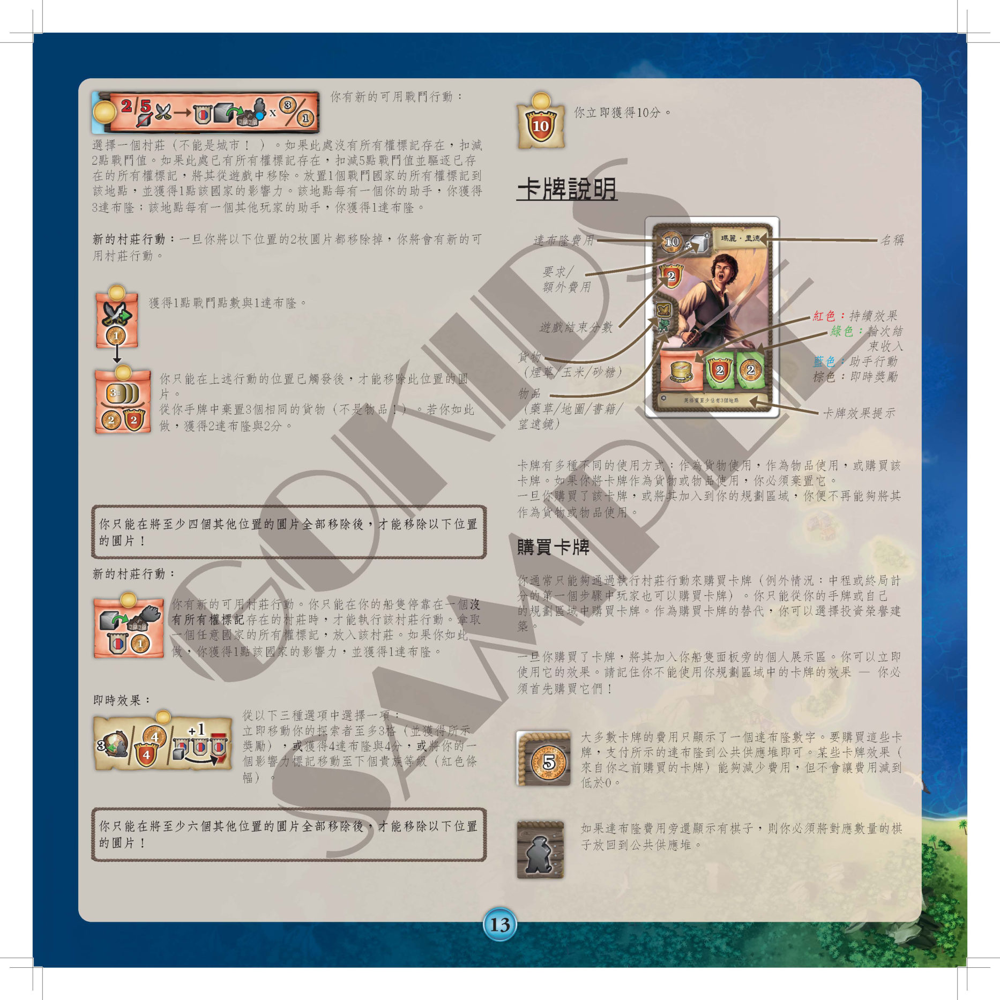
〔图 战斗行动横幅图标——浅蓝底卷轴，上印红字“2/5”、被划掉的货物方块、交叉双剑、箭头、旗帜、货物方块、绿色箭头指向建筑与蓝色圆片、“x”、圆圈“3”与圆圈“1”〕 你有新的可用战斗行动：
选择一个村庄（不能是城市！）。如果此处没有所有权标记存在，扣减2点战斗值。如果此处已有所有权标记存在，扣减5点战斗值并驱逐已存在的所有权标记，将其从游戏中移除。放置1个战斗国家的所有权标记到该地点，并获得1点该国家的影响力。该地点每有一个你的助手，你获得3达布隆；该地点每有一个其他玩家的助手，你获得1达布隆。
新的村庄行动：一旦你将以下位置的2枚圆片都移除掉，你将会有新的可用村庄行动。
〔图 卷轴图标，上印交叉双剑与绿色箭头、“1”圆硬币〕 获得1点战斗点数与1达布隆。
↓
〔图 卷轴图标，上印“3=”三枚货物方块、下方“2”硬币与“2”盾徽〕 你只能在上述行动的位置已触发后，才能移除此位置的圆片。从你手牌中弃置3个相同的货物（不是物品！）。若你如此做，获得2达布隆与2分。
你只能在将至少四个其他位置的圆片全部移除后，才能移除以下位置的圆片！
新的村庄行动：
〔图 卷轴图标，上印货物方块经绿色箭头指向建筑与黑色拳头、下方旗帜与“1”硬币〕 你有新的可用村庄行动。你只能在你的船只停靠在一个没有所有权标记存在的村庄时，才能执行该村庄行动。拿取一个任意国家的所有权标记，放入该村庄。如果你如此做，你获得1点该国家的影响力，并获得1达布隆。
即时效果：
〔图 羊皮纸横幅图标，上印“3”（地球与探索者）、“4”硬币与“4”红旗、“+1”、三面旗帜与货物方块经黑色箭头指向红色标记〕
从以下三种选项中选择一项：
立即移动你的探索者至多3格（并获得所示奖励），或获得4达布隆与4分，或将你的一个影响力标记移动至下个贵族等级（红色条幅）。
你只能在将至少六个其他位置的圆片全部移除后，才能移除以下位置的圆片！
〔图 红色“10”盾徽〕 你立即获得10分。
〔图 英雄卡“玛丽·里德”示例图。卡牌左上印有“10”硬币、带“*”上标的货物符号、红色“2”盾徽；中部人物插画；底部三块行动面板（红底金色淘金盘、红色“2”盾徽、绿色“2”硬币）；最下栏印“＊英雄需至少占有3个地点〔?:此二字字小难辨，似“雄需”〕”〕
图旁标注文字：
卡牌有多种不同的使用方式：作为货物使用，作为物品使用，或购买该卡牌。如果你将卡牌作为货物或物品使用，你必须弃置它。
一旦你购买了该卡牌，或将其加入到你的规划区域，你便不再能够将其作为货物或物品使用。
你通常只能够通过执行村庄行动来购买卡牌（例外情况：中程或终局计分的第一个步骤中玩家也可以购买卡牌）。你只能从你的手牌或自己的规划区域中购买卡牌。作为购买卡牌的替代，你可以选择投资荣誉建筑。
一旦你购买了卡牌，将其加入你船只面板旁的个人展示区。你可以立即使用它的效果。请记住你不能使用你规划区域中的卡牌的效果 — 你必须首先购买它们！
〔图 绳框木底“5”硬币图标〕 大多数卡牌的费用只显示了一个达布隆数字。要购买这些卡牌，支付所示的达布隆到公共供应堆即可。某些卡牌效果（来自你之前购买的卡牌）能够减少费用，但不会让费用减到低于0。
〔图 绳框木底黑色工人棋子图标〕 如果达布隆费用旁还显示有棋子，则你必须将对应数量的棋子放回到公共供应堆。
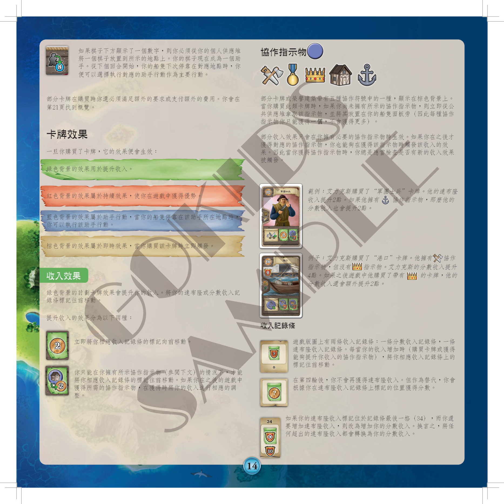
〔图 绳框木底图标——黑色工人棋子经绿色箭头指向蓝色圆片（圆片内印“8”）〕 如果棋子下方显示了一个数字，则你必须从你的个人供应堆将一个棋子放置到所示的地点上。你的棋子现在成为一个助手。从下个回合开始，你的船只下次停靠在对应地点时，你便可以选择执行对应的助手行动作为主要行动。
部分卡牌在购买时你还必须满足额外的要求或支付额外的费用。你会在第21页找到概览。
一旦你购买了卡牌，它的效果便会生效：
〔绿色卷轴横幅〕绿色背景的效果用于提升收入。
〔红色卷轴横幅〕红色背景的效果属于持续效果，使你在游戏中获得优势。
〔蓝色卷轴横幅〕蓝色背景的效果属于助手行动，当你的船只停靠在该助手所在地点时，你就可以执行该助手行动。
〔棕色卷轴横幅〕棕色背景的效果属于即时效果，当你购买该卡牌时立即触发。
绿色背景的计划卡牌效果会提升你的收入。将你的达布隆或分数收入记录条标记往前移动。
提升收入的效果分为以下两种：
〔图 绿色计划卡图标，上印“2”硬币〕 立即将你相应收入记录条的标记向前移动。
〔图 绿色计划卡图标，上印蓝色圆片（内有房屋图案）、绿色箭头与“2”硬币〕 你只能在你拥有所示协作指示物（参阅下文）的情况下，才能将你相应收入记录条的标记往前移动。如果你在之后的游戏中获得所需的协作指示物，在获得时将你的收入进行相应的调整。
〔图 五个协作符号图标——交叉的锯子与斧头、奖章、皇冠、半木结构房屋、船锚〕
部分卡牌或荣誉建筑带有五种协作符号中的一种，显示在棕色背景上。当你购买此类卡牌时，如果你尚未拥有所示的协作指示物，则立即从公共供应堆拿取该指示物，并将其放置在你的船只面板旁（因此每种协作指示物你只能获得一个，不会获得更多）。
部分收入效果只会在你拥有必要的协作指示物时生效。如果你在之后才获得对应的协作指示物，你也能够在获得该指示物时触发该收入的效果。因此当你获得协作指示物时，你总是应当检查是否有新的收入效果被触发。
〔图 卡牌示例照片一——“军团士兵”卡，左上印“12”硬币，士兵插画，底部三块行动面板（“5”与交叉剑、绿色“2”硬币、蓝色锚与“2”盾徽）〕 范例：艾力克斯购买了“军团士兵”卡牌。他的达布隆收入提升2点。如果他拥有〔船锚图标〕协作指示物，那么他的分数收入也会提升2点。
〔图 卡牌示例照片二——“港口”卡，左上印“16”硬币与红色“2”盾徽，帆船插画，底部蓝色行动面板〕 例子〔原文如此：前例作“范例”，此处作“例子”〕：艾力克斯购买了“港口”卡牌。他拥有〔锯斧图标〕协作指示物，但没有〔皇冠图标〕指示物。艾力克斯的分数收入提升4点。如果之后游戏中他购买了带有〔皇冠图标〕的卡牌，他的分数收入还会额外提升2点。
〔图 版图收入记录条局部截图——绿色记录条起始端、红色盾徽印“?”、下方数字“0”〕 游戏版图上有两条收入记录条：一条分数收入记录条，一条达布隆收入记录条。每当你的收入增加时（购买卡牌或获得能够提升你收入的协作指示物），将你相应收入记录条上的标记往前移动。
〔图 绿色计划卡图标，上印“?”硬币〕 在第四轮后，你不会再获得达布隆收入。但作为替代，你会根据你在达布隆收入记录条上标记的位置获得分数。
〔图 收入记录条末段局部截图——印“34”、带“→”的红色盾徽与“10”盾徽〕 如果你的达布隆收入标记位于记录条最后一格（34），而你还要增加达布隆收入，则改为增加你的分数收入。换言之，将任何超出的达布隆收入都会转换为你的分数收入〔原文如此：“将”字于此疑为衍字〕。
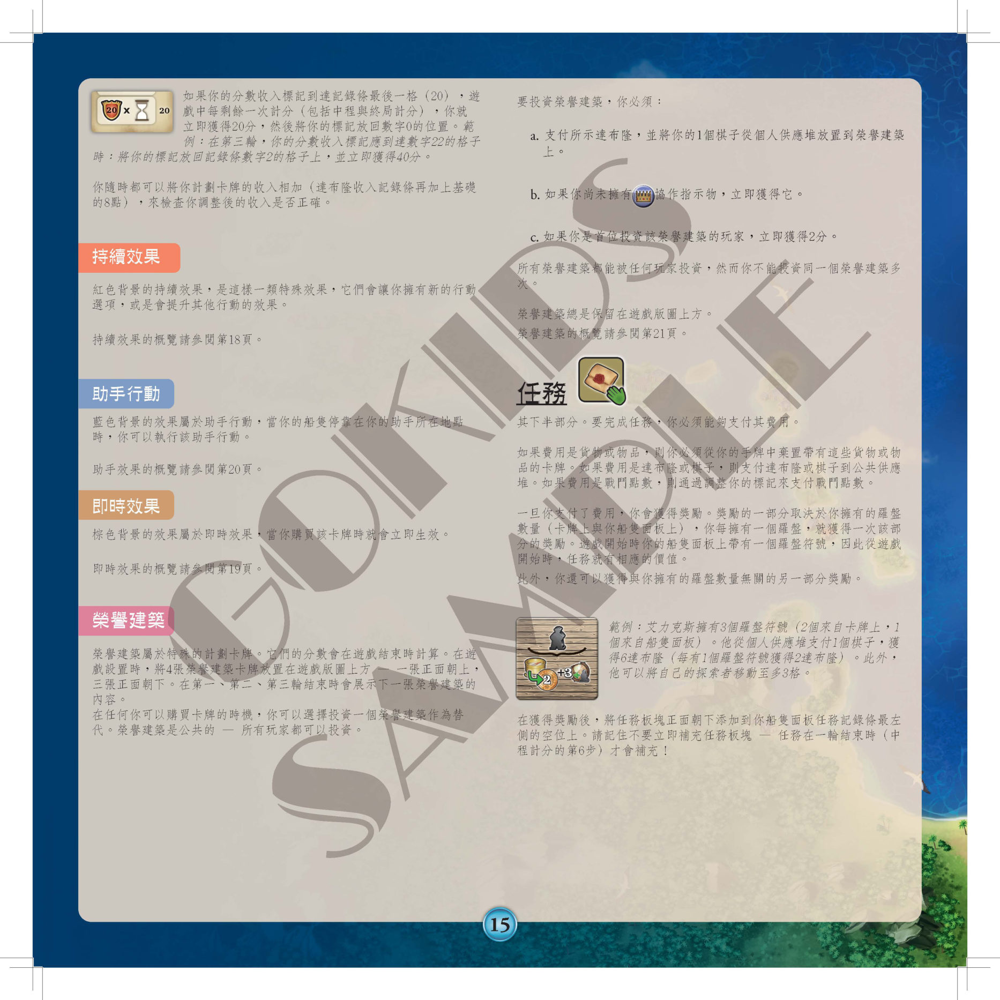
〔图 提示框图标——印有「20」的盾形徽章、「×」号与沙漏，右侧标数字20〕
如果你的分数收入标记到达记录条最后一格（20），游戏中每剩余一次计分（包括中程与终局计分），你就立即获得20分，然后将你的标记放回数字0的位置。范例：在第三轮，你的分数收入标记应到达数字22的格子时：将你的标记放回记录条数字2的格子上，并立即获得40分。
你随时都可以将你计划卡牌的收入相加（达布隆收入记录条再加上基础的8点），来检查你调整后的收入是否正确。
红色背景的持续效果，是这样一类特殊效果，它们会让你拥有新的行动选项，或是会提升其他行动的效果。
持续效果的概览请参阅第18页。
蓝色背景的效果属于助手行动，当你的船只停靠在你的助手所在地点时，你可以执行该助手行动。
助手效果的概览请参阅第20页。
棕色背景的效果属于即时效果，当你购买该卡牌时就会立即生效。
即时效果的概览请参阅第19页。
荣誉建筑属于特殊的计划卡牌。它们的分数会在游戏结束时计算。在游戏设置时，将4张荣誉建筑卡牌放置在游戏版图上方 — 一张正面朝上，三张正面朝下。在第一、第二、第三轮结束时会展示下一张荣誉建筑的内容。
在任何你可以购买卡牌的时机，你可以选择投资一个荣誉建筑作为替代。荣誉建筑是公共的 — 所有玩家都可以投资。
要投资荣誉建筑，你必须：
a. 支付所示达布隆，并将你的1个棋子从个人供应堆放置到荣誉建筑上。
b. 如果你尚未拥有〔图 蓝色圆形皇冠图标〕协作指示物，立即获得它。
c. 如果你是首位投资该荣誉建筑的玩家，立即获得2分。
所有荣誉建筑都能被任何玩家投资，然而你不能投资同一个荣誉建筑多次。
荣誉建筑总是保留在游戏版图上方。
荣誉建筑的概览请参阅第21页。
〔图 火漆封印信件与绿色手掌图标（任务章节标题图）〕
其下半部分。要完成任务，你必须能够支付其费用。
如果费用是货物或物品，则你必须从你的手牌中弃置带有这些货物或物品的卡牌。如果费用是达布隆或棋子，则支付达布隆或棋子到公共供应堆。如果费用是战斗点数，则通过调整你的标记来支付战斗点数。
一旦你支付了费用，你会获得奖励。奖励的一部分取决于你拥有的罗盘数量（卡牌上与你船只面板上），你每拥有一个罗盘，就获得一次该部分的奖励。游戏开始时你的船只面板上带有一个罗盘符号，因此从游戏开始时，任务就有相应的价值。
此外，你还可以获得与你拥有的罗盘数量无关的另一部分奖励。
〔图 任务板块范例照片——木纹板块上印有黑色棋子、酒桶经绿色箭头指向「2」枚钱币、「+3」与罗盘符号〕
范例：艾力克斯拥有3个罗盘符号（2个来自卡牌上，1个来自船只面板）。他从个人供应堆支付1个棋子，获得6达布隆（每有1个罗盘符号获得2达布隆）。此外，他可以将自己的探索者移动至多3格。
在获得奖励后，将任务板块正面朝下添加到你船只面板任务记录条最左侧的空位上。请记住不要立即补充任务板块 — 任务在一轮结束时（中程计分的第6步）才会补充！
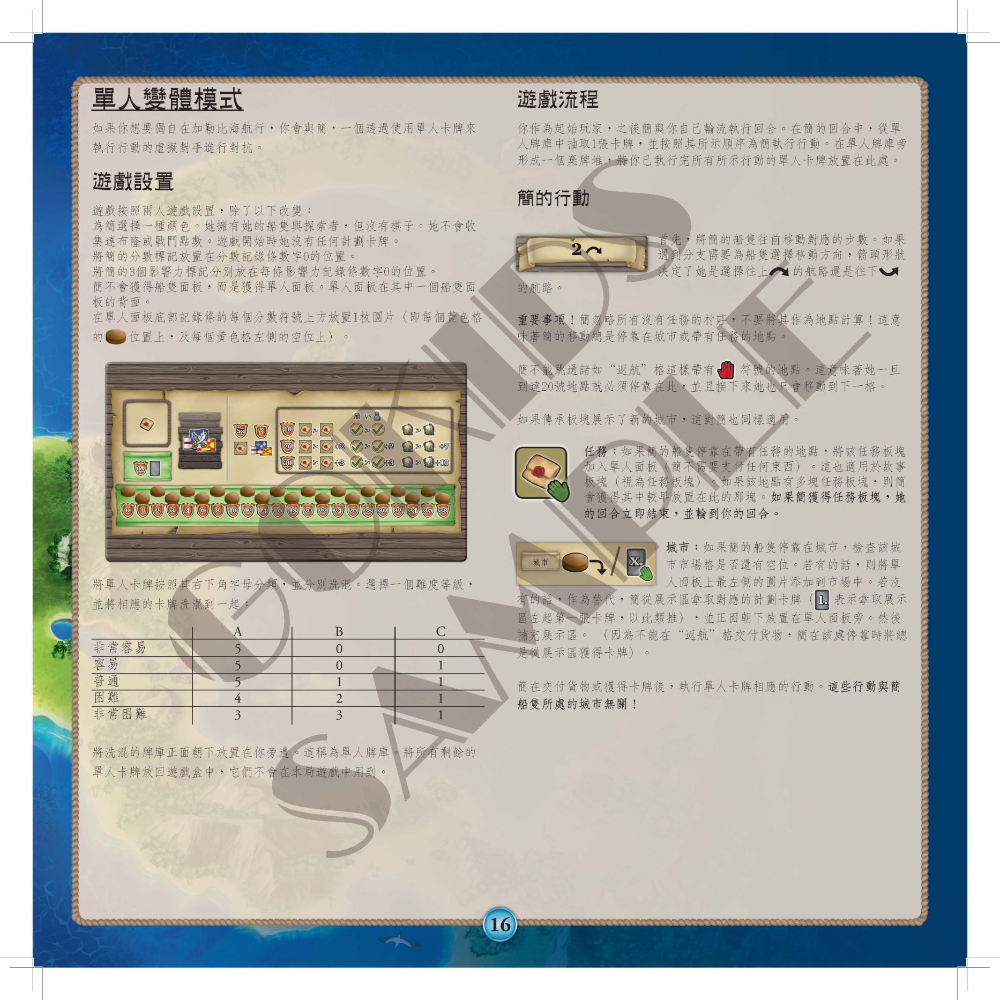
如果你想要独自在加勒比海航行，你会与简，一个透过使用单人卡牌来执行行动的虚拟对手进行对抗。
游戏按照两人游戏设置，除了以下改变：
为简选择一种颜色。她拥有她的船只与探索者，但没有棋子。她不会收集达布隆或战斗点数。游戏开始时她没有任何计划卡牌。
将简的分数标记放置在分数记录条数字0的位置。
将简的3个影响力标记分别放在每条影响力记录条数字0的位置。
简不会获得船只面板，而是获得单人面板。单人面板在其中一个船只面板的背面。
在单人面板底部记录条的每个分数符号上方放置1枚圆片（即每个黄色格的〔图 棕色椭圆片图标〕位置上，及每个黄色格左侧的空位上）。
〔图 单人面板照片——左上为绳框任务板块放置区与印有「1x」盾徽的绿色小条，中间为木箱与旗徽图案及「5x」「?」盾徽，右侧为标有「简 VS」的计分对照表（三行盾徽数字「10」「20」「30」，含任务板块、勾选、罗盘图标两两对比及「+2」「+3」「+7」「+10」加成数字）；底部绿色记录条上排列棕色圆片与依次标有0、1、2、3、4、6、8、10、12、14、16、18、20、22、24、26、28、30、32、34、36、38的盾徽〕
将单人卡牌按照其右下角字母分类，并分别洗混。选择一个难度等级，并将相应的卡牌洗混到一起：
| A | B | C | ||
|---|---|---|---|---|
| 非常容易 | 5 | 0 | 0 | |
| 容易 | 5 | 0 | 1 | |
| 普通 | 5 | 1 | 1 | |
| 困难 | 4 | 2 | 1 | |
| 非常困难 | 3 | 3 | 1 |
将洗混的牌库正面朝下放置在你旁边。这称为单人牌库。将所有剩余的单人卡牌放回游戏盒中，它们不会在本局游戏中用到。
你作为起始玩家，之后简与你自己轮流执行回合。在简的回合中，从单人牌库中抽取1张卡牌，并按照其所示顺序为简执行行动。在单人牌库旁形成一个弃牌堆，将你已执行完所有所示行动的单人卡牌放置在此处。
〔图 羊皮卷轴图标，上印「2」与一个弯箭头〕
首先，将简的船只往前移动对应的步数。如果遇到分支需要为船只选择移动方向，箭头形状决定了她是选择往上〔图 弯箭头图标〕的航路还是往下〔图 弯箭头图标〕的航路。
重要事项！简忽略所有没有任务的村庄，不要将其作为地点计算！这意味著简的移动总是停靠在城市或带有任务的地点。
简不能跳过诸如“返航”格这样带有〔图 红色手掌符号〕符号的地点。这意味著她一旦到达20号地点就必须停靠在此，并且接下来她也只会移动到下一格。
如果传承板块展示了新的城市，这对简也同样适用。
〔图 火漆信件与绿色手掌图标〕任务：如果简的船只停靠在带有任务的地点，将该任务板块加入单人面板（简不需要支付任何东西）。这也适用于故事板块（视为任务板块）。如果该地点有多块任务板块，则简会获得其中较早放置在此的那块。如果简获得任务板块，她的回合立即结束，并轮到你的回合。
〔图 图标——「城市」方框、棕色圆片、向下弯箭头、斜杠、印「X」的深色卡牌与绿色手掌〕城市：如果简的船只停靠在城市，检查该城市市场格是否还有空位。若有的话，则将单人面板上最左侧的圆片添加到市场中。若没有的话，作为替代，简从展示区拿取对应的计划卡牌（〔图 小方框内「1.」图标〕表示拿取展示区左起第一张卡牌，以此类推），并正面朝下放置在单人面板旁。然后补充展示区。（因为不能在“返航”格交付货物，简在该处停靠时将总是从展示区获得卡牌）。
简在交付货物或获得卡牌后，执行单人卡牌相应的行动。这些行动与简船只所处的城市无关！
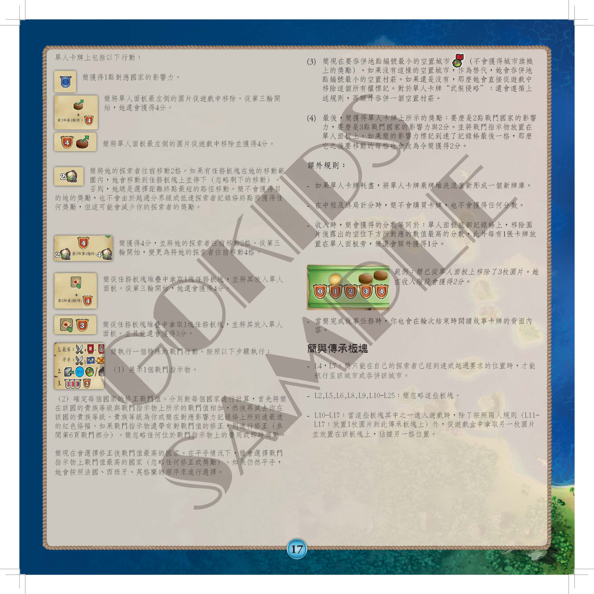
单人卡牌上包括以下行动：
〔图 单人卡牌图示：蓝色旗帜〕
〔图 单人卡牌图示：棕色圆片加绿色箭头，下方标签「第3和第4轮时：」与盾牌「4」〕
〔图 单人卡牌图示：盾牌「4」与棕色圆片加绿色箭头〕
〔图 单人卡牌图示：数字「2」与探索者圆片〕
〔图 单人卡牌图示：上方盾牌「4」，左侧数字「2」与探索者圆片，中间标签「第3和第4轮时：」与盾牌「4」及探索者圆片〕
〔图 单人卡牌图示：任务板块与绿色手套，下方「＋」与标签「第3和第4轮时：」及盾牌「4」〕
〔图 单人卡牌图示：任务板块与绿色手套，旁为盾牌「3」〕
〔图 战斗摘要卡缩图，印有「1. 最高：」交叉刀剑＋盾牌－人物像、「平手：」交叉刀剑；鸢尾花旗＞十字旗、「2.」黑色方块经箭头指向标有「最小」的蓝色圆片、六角地形／房屋、「3.」三枚骑兵指示物与盾牌「2」〕
（1）展示1个战斗指示物。
（2）确定每个国家的修正战斗值。分别对每个国家进行计算，首先将简在该国的贵族等级与战斗指示物上所示的战斗值相加，然后再减去你在该国的贵族等级。贵族等级为你或简在对应影响力记录条上所到达最远的红色条幅。如果战斗指示物还带有对战斗值的修正，则进行修正（参阅第6页战斗部分）。简忽略任何位于战斗指示物上的费用或即时奖励。
简现在会选择修正后战斗值最高的国家。在平手情况下，简会选择战斗指示物上战斗值最高的国家（忽略任何修正或奖励）。如果仍然平手，她会按照法国、西班牙、英格兰的顺序来进行选择。
（3）简现在要吞并地点编号最小的空置城市〔图示：城市与红旗〕（不会获得城市旗帜上的奖励）。如果没有这样的空置城市，作为替代，她会吞并地点编号最小的空置村庄。如果还是没有，那么她会直接从游戏中移除这个所有权标记。对於单人卡牌“武装侵略”：还会遵循上述规则，再额外吞并一个空置村庄。
（4）最后，简获得单人卡牌上所示的奖励：要么是2点战斗国家的影响力，要么是3点战斗国家的影响力与2分。并将战斗指示物放置在单人面板上。如果简的影响力标记到达了记录条最后一格，那么它之后要移动的每格也会改为令简获得2分。
〔图 单人面板底部记录条照片：绿色卷轴底板上有五面盾牌，标示数字0、1、2、3、4，数字1上方有一枚浅色圆片，数字3附近上方有两枚深棕色圆片〕
范例：简已从单人面板上移除了3枚圆片。她在收入阶段会获得2分。
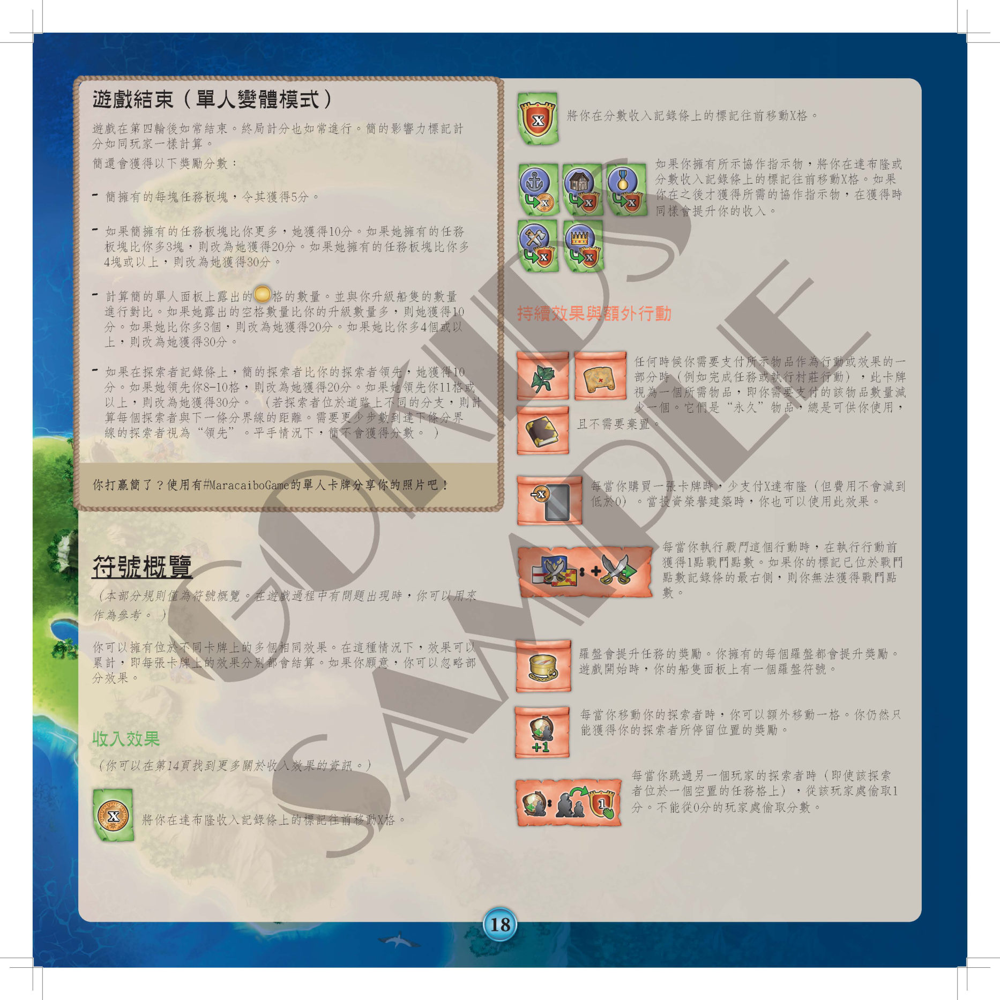
游戏在第四轮后如常结束。终局计分也如常进行。简的影响力标记计分如同玩家一样计算。〔原文如此：句中「计分」与句末「计算」语意重复〕
简还会获得以下奖励分数：
你打赢简了？使用有#MaracaiboGame的单人卡牌分享你的照片吧！〔原文如此：「使用有」之「有」字用法突兀，照录〕
（本部分规则仅为符号概览。在游戏过程中有问题出现时，你可以用来作为参考。）
你可以拥有位于不同卡牌上的多个相同效果。在这种情况下，效果可以累计，即每张卡牌上的效果分别都会结算。如果你愿意，你可以忽略部分效果。
（你可以在第14页找到更多关于收入效果的资讯。）
〔图 绿色卷轴符号：金色达布隆钱币，币面有「X」〕
将你在达布隆收入记录条上的标记往前移动X格。
〔图 绿色卷轴符号：红色盾牌，盾面有「X」〕
将你在分数收入记录条上的标记往前移动X格。
〔图 五个绿色卷轴符号，均为蓝色圆形图案加绿色箭头指向「X」：锚指向「X」钱币；房屋指向「X」盾牌；奖章指向「X」盾牌；斧镐工具指向「X」盾牌；王冠指向「X」盾牌〕
如果你拥有所示协作指示物，将你在达布隆或分数收入记录条上的标记往前移动X格。如果你在之后才获得所需的协作指示物，在获得时同样会提升你的收入。
〔图 两个红色卷轴符号：绿色树叶；卷起的地图。左下另有一个红色卷轴符号：黑色封皮书本〕
任何时候你需要支付所示物品作为行动或效果的一部分时（例如完成任务或执行村庄行动），此卡牌视为一个所需物品，即你需要支付的该物品数量减少一个。它们是“永久”物品，总是可供你使用，且不需要弃置。
〔图 红色卷轴符号：黑色卡牌，左上角「-X」钱币〕
每当你购买一张卡牌时，少支付X达布隆（但费用不会减到低于0）。当投资荣誉建筑时，你也可以使用此效果。
〔图 红色长卷轴符号：英格兰旗、法国鸢尾花旗、西班牙旗与交叉刀剑，其后为「：＋」与单把刀剑加绿色箭头〕
每当你执行战斗这个行动时，在执行行动前获得1点战斗点数。如果你的标记已位于战斗点数记录条的最右侧，则你无法获得战斗点数。
〔图 红色卷轴符号：金色罗盘〕
罗盘会提升任务的奖励。你拥有的每个罗盘都会提升奖励。游戏开始时，你的船只面板上有一个罗盘符号。
〔图 红色卷轴符号：探索者圆片与绿色「+1」〕
每当你移动你的探索者时，你可以额外移动一格。你仍然只能获得你的探索者所停留位置的奖励。
〔图 红色长卷轴符号：戴帽探索者圆片「：」两枚深色探索者棋子，绿色箭头指向标有「1」的红色盾牌与绿色手套〕
每当你跳过另一个玩家的探索者时（即使该探索者位于一个空置的任务格上），从该玩家处偷取1分。不能从0分的玩家处偷取分数。
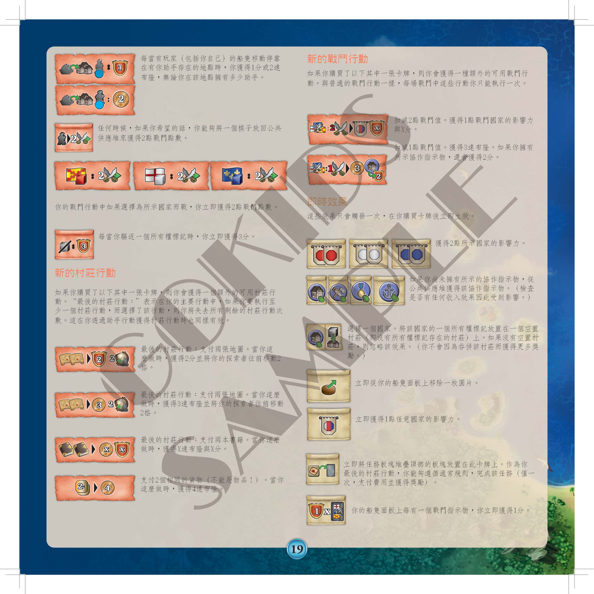
〔图 两张卡牌图示，均为「船只→房屋、助手图示」，分别以冒号接红盾1、金币2〕
每当有玩家（包括你自己）的船只移动停靠在有你助手存在的地点时，你获得1分或2达布隆，无论你在该地点拥有多少助手。
〔图 卡牌图示：助手图示▶2（附交叉刀剑图示）〕
任何时候，如果你希望的话，你能够将一个棋子放回公共供应堆来获得2点战斗点数。
〔图 三张卡牌图示：西班牙旗＋红色方块、英格兰旗＋白色方块、法兰西旗＋蓝色方块，各以冒号接「2」与交叉刀剑图示〕
你的战斗行动中如果选择为所示国家而战，你立即获得2点战斗点数。
〔图 卡牌图示：被斜线划掉的灰色方块，冒号接红盾3〕
每当你驱逐一个所有权标记时，你立即获得3分。
如果你购买了以下其中一张卡牌，则你会获得一个额外的可用村庄行动。“最后的村庄行动：”表示在你的主要行动中，如果你要执行至少一个村庄行动，而选择了该行动，则你将失去所有剩余的村庄行动次数。这在你透过助手行动获得村庄行动时也同样有效。
〔图 卡牌图示：两张地图▶红盾2、探索者图示2〕
最后的村庄行动：支付两张地图。当你这么做时，获得2分并将你的探索者往前移动2格。
〔图 卡牌图示：两张地图▶金币3、探索者图示2〕
最后的村庄行动：支付两张地图。当你这么做时，获得3达布隆并将你的探索者往前移动2格。
〔图 卡牌图示：两本书籍▶金币X、红盾X〕
最后的村庄行动：支付两本书籍。当你这么做时，获得X达布隆与X分。
〔图 卡牌图示：「2x」货物图示▶金币4〕
支付2个相同的货物（不能是物品！）。当你这么做时，获得4达布隆。
如果你购买了以下其中一张卡牌，则你会获得一种额外的可用战斗行动。与普通的战斗行动一样，每场战斗中这些行动你只能执行一次。
〔图 卡牌图示：英格兰旗与西班牙旗上交叉刀剑「：2」▶法国影响力旗帜图示、红盾X〕
扣减2点战斗值。获得1点战斗国家的影响力与X分。
〔图 卡牌图示：英格兰旗与西班牙旗上交叉刀剑「：1」▶金币3、房屋协作指示物图示以绿色箭头接红盾2〕
扣减1点战斗值。获得3达布隆。如果你拥有所示协作指示物，还会获得2分。
这些效果只会触发一次，在你购买卡牌后立即生效。
〔图 三对国家影响力旗帜图示（红色、白色、蓝色各一对）〕
获得2点所示国家的影响力。
〔图 四个协作指示物图示：房屋、交叉工具、奖章、船锚，各附绿色手形图示〕
如果你尚未拥有所示的协作指示物，从公共供应堆获得该协作指示物。（检查是否有任何收入效果因此受到影响。）
〔图 卡牌图示：房屋协作指示物附绿色手形图示、灰色方块以绿色箭头指向村庄图示〕
选择一个国家。将该国家的一个所有权标记放置在一个空置村庄（即没有所有权标记存在的村庄）上。如果没有空置村庄，则忽略该效果。（你不会因为吞并该村庄而获得更多奖励。）
〔图 卡牌图示：棕色圆片与绿色箭头〕
立即从你的船只面板上移除一枚圆片。
〔图 卡牌图示：法国影响力旗帜图示〕
立即获得1点任意国家的影响力。
〔图 卡牌图示：任务板块以绿色箭头指向灰色卡牌轮廓〕
立即将任务板块堆叠顶部的板块放置在此卡牌上。作为你最后的村庄行动，你能够遵循通常规则，完成该任务（仅一次，支付费用并获得奖励）。
〔图 卡牌图示：红盾1、「X」、战斗指示物图示（三面国旗与交叉刀剑）〕
你的船只面板上每有一个战斗指示物，你立即获得1分。
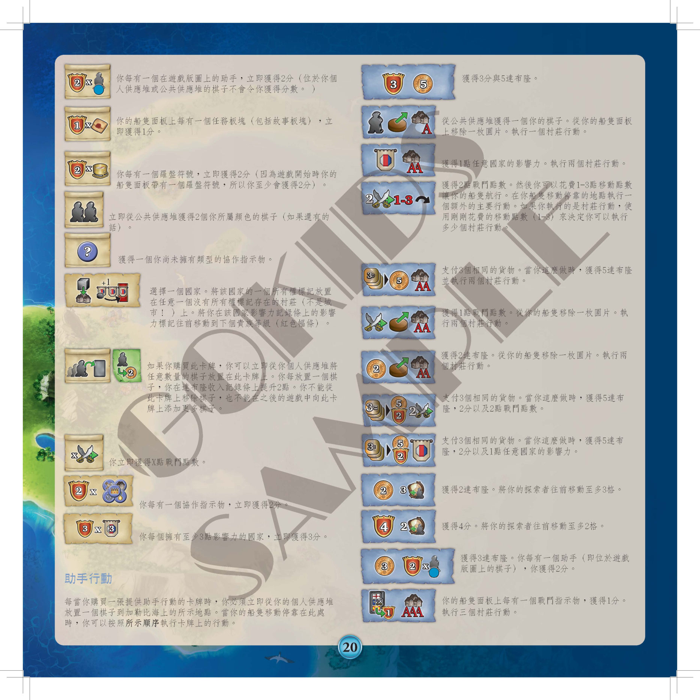
〔图 卡牌图示：红盾2、「x」、黑色棋子立于蓝色圆片上的助手图示〕
你每有一个在游戏版图上的助手，立即获得2分（位于你个人供应堆或公共供应堆的棋子不会令你获得分数。）
〔图 卡牌图示：红盾1、「x」、任务板块图示〕
你的船只面板上每有一个任务板块（包括故事板块），立即获得1分。
〔图 卡牌图示：红盾2、「x」、罗盘图示〕
你每有一个罗盘符号，立即获得2分（因为游戏开始时你的船只面板带有一个罗盘符号，所以你至少会获得2分）。
〔图 卡牌图示：两个黑色棋子图示〕
立即从公共供应堆获得2个你所属颜色的棋子（如果还有的话）。
〔图 卡牌图示：蓝色圆形问号图示〕
获得一个你尚未拥有类型的协作指示物。
〔图 卡牌图示：灰色方块以绿色箭头指向村庄图示；「+1」与三面法国影响力旗帜图示、黑色圆片以箭头指向红色幅条图示〕
选择一个国家。将该国家的一个所有权标记放置在任意一个没有所有权标记存在的村庄（不是城市！）上。将你在该国家影响力记录条上的影响力标记往前移动到下个贵族等级（红色幅条）。
〔图 卡牌图示：数个棋子以绿色箭头指向灰色卡牌图示；绿色方形贴纸上黑色棋子以绿色箭头指向金币2〕
如果你购买此卡牌，你可以立即从你个人供应堆将任意数量的棋子放置在此卡牌上。你每放置一个棋子，你在达布隆收入记录条上提升2点。你不能从此卡牌上移除棋子，也不能在之后的游戏中向此卡牌上添加更多棋子。
〔图 卡牌图示：「x」与交叉刀剑（附绿色箭头）图示〕
你立即获得X点战斗点数。
〔图 卡牌图示：红盾2、「x」、蓝色圆形协作指示物群图示（含工具、房屋、皇冠、船锚、奖章等）〕
你每有一个协作指示物，立即获得2分。
〔图 卡牌图示：红盾3、「x」、标示数字3的国家影响力旗帜图示〕
你每个拥有至少3点影响力的国家，立即获得3分。
每当你购买一张提供助手行动的卡牌时，你必须立即从你的个人供应堆放置一个棋子到加勒比海上的所示地点。当你的船只移动停靠在此处时，你可以按照所示顺序执行卡牌上的行动。
〔图 蓝色卡牌横幅图示：红盾3、金币5〕
获得3分与5达布隆。
〔图 蓝色卡牌横幅图示：黑色棋子、棕色圆片附绿色箭头、房屋图示（下方红色字母A）〕
从公共供应堆获得一个你的棋子。从你的船只面板上移除一枚圆片。执行一个村庄行动。
〔图 蓝色卡牌横幅图示：法国影响力旗帜图示、房屋图示（下方红色字母AA）〕
获得1点任意国家的影响力。执行两个村庄行动。
〔图 蓝色卡牌横幅图示：「2」与交叉刀剑（附绿色箭头）、「1-3」与黑色弧形箭头〕
获得2点战斗点数。然后你可以花费1-3点移动点数让你的船只航行。在你船只移动停靠的地点执行一个额外的主要行动。如果你执行的是村庄行动，使用刚刚花费的移动点数（1-3）来决定你可以执行多少个村庄行动。
〔图 蓝色卡牌横幅图示：「3x」货物图示▶金币5、房屋图示（下方红色字母AA）〕
支付3个相同的货物。当你这么做时，获得5达布隆并执行两个村庄行动。
〔图 蓝色卡牌横幅图示：交叉刀剑附绿色箭头、棕色圆片附绿色箭头、房屋图示（下方红色字母AA）〕
获得1点战斗点数。从你的船只移除一枚圆片。执行两个村庄行动。
〔图 蓝色卡牌横幅图示：金币2、棕色圆片附绿色箭头、房屋图示（下方红色字母AA）〕
获得2达布隆。从你的船只移除一枚圆片。执行两个村庄行动。
〔图 蓝色卡牌横幅图示：「3x」货物图示▶金币5叠红盾2、「2」与交叉刀剑附绿色箭头〕
支付3个相同的货物。当你这么做时，获得5达布隆，2分以及2点战斗点数。
〔图 蓝色卡牌横幅图示：「3x」货物图示▶金币5叠红盾2、法国影响力旗帜图示〕
支付3个相同的货物。当你这么做时，获得5达布隆，2分以及1点任意国家的影响力。
〔图 蓝色卡牌横幅图示：金币2、数字3与探索者图示〕
获得2达布隆。将你的探索者往前移动至多3格。
〔图 蓝色卡牌横幅图示：红盾4、数字2与探索者图示〕
获得4分。将你的探索者往前移动至多2格。
〔图 蓝色卡牌横幅图示：金币3、红盾2、「x」、黑色棋子立于蓝色圆片上的助手图示〕
获得3达布隆。你每有一个助手（即位于游戏版图上的棋子），你获得2分。
〔图 蓝色卡牌横幅图示：战斗指示物图示以绿色箭头接红盾1、房屋图示（下方红色字母AAA）〕
你的船只面板上每有一个战斗指示物，获得1分。执行三个村庄行动。
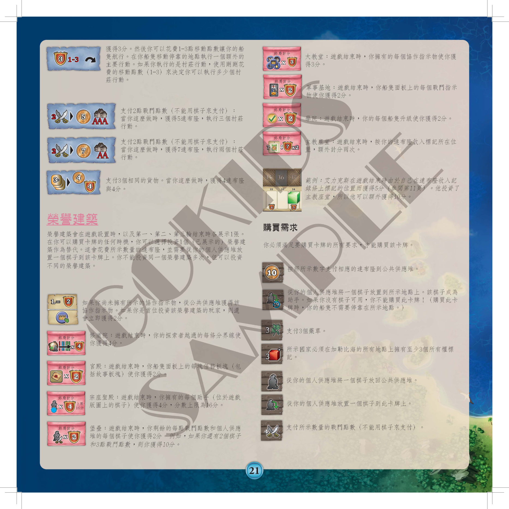
〔图 蓝色卷轴图示：盾牌「3」、「1-3」与弧形箭头〕
获得3分。然后你可以花费1-3点移动点数让你的船只航行。在你船只移动停靠的地点执行一个额外的主要行动。如果你执行的是村庄行动，使用刚刚花费的移动点数（1-3）来决定你可以执行多少个村庄行动。
〔图 蓝色卷轴图示：「2」交叉刀剑▶金币「5」、房屋「AAA」〕
支付2点战斗点数（不能用棋子来支付）：当你这么做时，获得5达布隆，执行三个村庄行动。
〔图 蓝色卷轴图示：「2」交叉刀剑▶金币「7」、房屋「AA」〕
支付2点战斗点数（不能用棋子来支付）：当你这么做时，获得7达布隆，执行两个村庄行动。
〔图 蓝色卷轴图示：金币叠「3=」▶金币「4」、盾牌「4」〕
支付3个相同的货物。当你这么做时，获得4达布隆与4分。
荣誉建筑会在游戏设置时，以及第一、第二、第三轮结束时各展示1张。在你可以购买卡牌的任何时机，你可以选择投资1个（已展示的）荣誉建筑作为替代。这会花费所示数量的达布隆，并需要从你的个人供应堆放置一个棋子到该卡牌上。你不能投资同一个荣誉建筑多次，但可以投资不同的荣誉建筑。
〔图 羊皮纸图示：上格「1.=」与盾牌「2」，下格蓝色圆形皇冠与绿手套协作指示物〕
如果你尚未拥有所示的协作指示物，从公共供应堆获得该协作指示物。如果你是首位投资该荣誉建筑的玩家，则还会立即获得2分。
〔图 粉色终局计分卷轴：探索者、彩色分界线与箭头、「x」盾牌「4」〕
修道院：游戏结束时，你的探索者越过的每条分界线使你获得4分。
〔图 粉色终局计分卷轴：任务板块「x」盾牌「2」〕
宫殿：游戏结束时，你船只面板上的每块任务板块（包括故事板块）使你获得2分。
〔图 粉色终局计分卷轴：棋子「x」盾牌「4」，旁注「上限16分」〕
宗座圣殿：游戏结束时，你拥有的每个助手（位于游戏版图上的棋子）使你获得4分，分数上限为16分。
〔图 粉色终局计分卷轴：持剑棋子「x」盾牌「2」〕
堡垒：游戏结束时，你剩余的每点战斗点数和个人供应堆的每个棋子使你获得2分。例如，如果你还有2个棋子和3点战斗点数，则你获得10分。
〔图 粉色终局计分卷轴：四枚协作指示物「x」盾牌「3」〕
大教堂：游戏结束时，你拥有的每个协作指示物使你获得3分。
〔图 粉色终局计分卷轴：战斗指示物（旗帜与交叉刀剑）「x」盾牌「2」〕
军事基地：游戏结束时，你船只面板上的每个战斗指示物使你获得2分。
〔图 粉色终局计分卷轴：金色圆圈内绿色勾勾「x」盾牌「2」〕
学院：游戏结束时，你的每个船只升级使你获得2分。
〔图 粉色终局计分卷轴：「?」板块、金币、「：」「?」「x2」〕
主教座堂：游戏结束时，按你的达布隆收入标记所在位置，额外计分两次。
〔图 达布隆收入记录条局部照片：上排数字35、36、37，下排数字22、23、24，绿色方块位于数字24下方，左下与右下各有盾牌「4」「5」〕
范例：艾力克斯在游戏结束时由于自己在达布隆收入记录条上标记的位置而获得5分（参阅第11页）。他投资了主教座堂，所以他可以额外获得10分。
你必须满足要购买卡牌的所有要求，才能购买该卡牌。
〔图 木底图示：金币「10」〕
按照所示数字支付相应的达布隆到公共供应堆。
〔图 木底图示：棋子经绿色箭头指向蓝色圆圈「19」〕
从你的个人供应堆将一个棋子放置到所示地点上。该棋子成为助手。如果你没有棋子可用，你不能购买此卡牌！（购买此卡牌时，你的船只不需要停靠在所示地点。）
〔图 木底图示：「3」与绿色药草〕
支付3个药草。
〔图 木底图示：「3」红色方块附星号〕
所示国家必须在加勒比海的所有地点上拥有至少3个所有权标记。
〔图 木底图示：棋子〕
从你的个人供应堆将一个棋子放回公共供应堆。
〔图 木底图示：棋子与绿色向下箭头〕
从你的个人供应堆放置一个棋子到此卡牌上。
〔图 木底图示：「4」交叉刀剑〕
支付所示数量的战斗点数（不能用棋子来支付）。
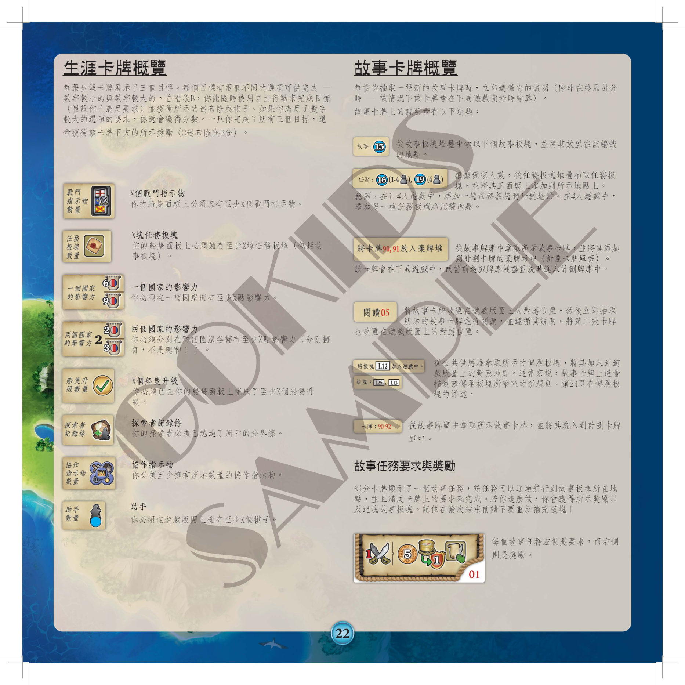
每张生涯卡牌展示了三个目标。每个目标有两个不同的选项可供完成 — 数字较小的与数字较大的。在阶段B，你能随时使用自由行动来完成目标（假设你已满足要求）并获得所示的达布隆与棋子。如果你满足了数字较大的选项的要求，你还会获得分数。一旦你完成了所有三个目标，还会获得该卡牌下方的所示奖励（2达布隆与2分）。
〔图 羊皮纸标签「战斗指示物数量」附战斗指示物图示（英格兰旗、法兰西旗与交叉刀剑、西班牙旗）〕
X个战斗指示物
你的船只面板上必须拥有至少X个战斗指示物。
〔图 羊皮纸标签「任务板块数量」附任务板块图示〕
X块任务板块
你的船只面板上必须拥有至少X块任务板块（包括故事板块）。
〔图 羊皮纸标签「一个国家的影响力」附旗帜盾牌「6」「9」〕
一个国家的影响力
你必须在一个国家拥有至少X点影响力。
〔图 羊皮纸标签「两个国家的影响力」、数字「2」与旗帜盾牌「2」「3」〕
两个国家的影响力
你必须分别在两个国家各拥有至少X点影响力（分别拥有，不是总和！）。
〔图 羊皮纸标签「船只升级数量」附金圈绿色勾勾〕
X个船只升级
你必须已在你的船只面板上完成了至少X个船只升级。
〔图 羊皮纸标签「探索者记录条」附地球仪、探索者与绿色箭头图示〕
探索者记录条
你的探索者必须已越过了所示的分界线。
〔图 羊皮纸标签「协作指示物数量」附四枚协作指示物图示〕
协作指示物
你必须至少拥有所示数量的协作指示物。
〔图 羊皮纸标签「助手数量」附蓝底棋子图示〕
助手
你必须在游戏版图上拥有至少X个棋子。
每当你抽取一张新的故事卡牌时，立即遵循它的说明（除非在终局计分时 — 该情况下该卡牌会在下局游戏开始时结算）。
故事卡牌上的说明会有以下这些：
〔图 米色标签「故事：」蓝圈「15」〕
从故事板块堆叠中拿取下个故事板块，并将其放置在该编号的地点。
〔图 米色标签「任务：」蓝圈「16」（1-4人形）、蓝圈「19」（4人形）〕
根据玩家人数，从任务板块堆叠抽取任务板块，并将其正面朝上添加到所示地点上。
范例：在1-4人游戏中，添加一块任务板块到16号地点。在4人游戏中，添加另一块任务板块到19号地点。
〔图 米色标签「将卡牌90,91放入弃牌堆」（90,91为红字）〕
从故事牌库中拿取所示故事卡牌，并将其添加到计划卡牌的弃牌堆中（计划卡牌库旁）。该卡牌会在下局游戏中，或当前游戏牌库耗尽重洗时进入计划牌库中。
〔图 米色标签「阅读」（05为红字）〕
将故事卡牌放置在游戏版图上的对应位置，然后立即抽取所示的故事卡牌进行阅读，并遵循其说明。将第二张卡牌也放置在游戏版图上的对应位置。
〔图 两张米色标签：「将板块 L12 加入游戏中。」与「板块： L25 , L13」〕
从公共供应堆拿取所示的传承板块，将其加入到游戏版图上的对应地点。通常来说，故事卡牌上还会描述该传承板块所带来的新规则。第24页有传承板块的详述。
〔图 米色标签「卡牌：」（90-92为红字）〕
从故事牌库中拿取所示故事卡牌，并将其洗入到计划卡牌库中。
部分卡牌显示了一个故事任务，该任务可以通过航行到故事板块所在地点，并且满足卡牌上的要求来完成。若你这么做，你会获得所示奖励以及这块故事板块。记住在轮次结束前请不要重新补充板块！
〔图 故事任务卡「01」：绳框羊皮纸卡片，左侧红字「1」交叉刀剑与大括号，右侧金币「5」、罗盘、绿色箭头接红盾「1」、地图与绿手套〕
每个故事任务左侧是要求，而右侧则是奖励。
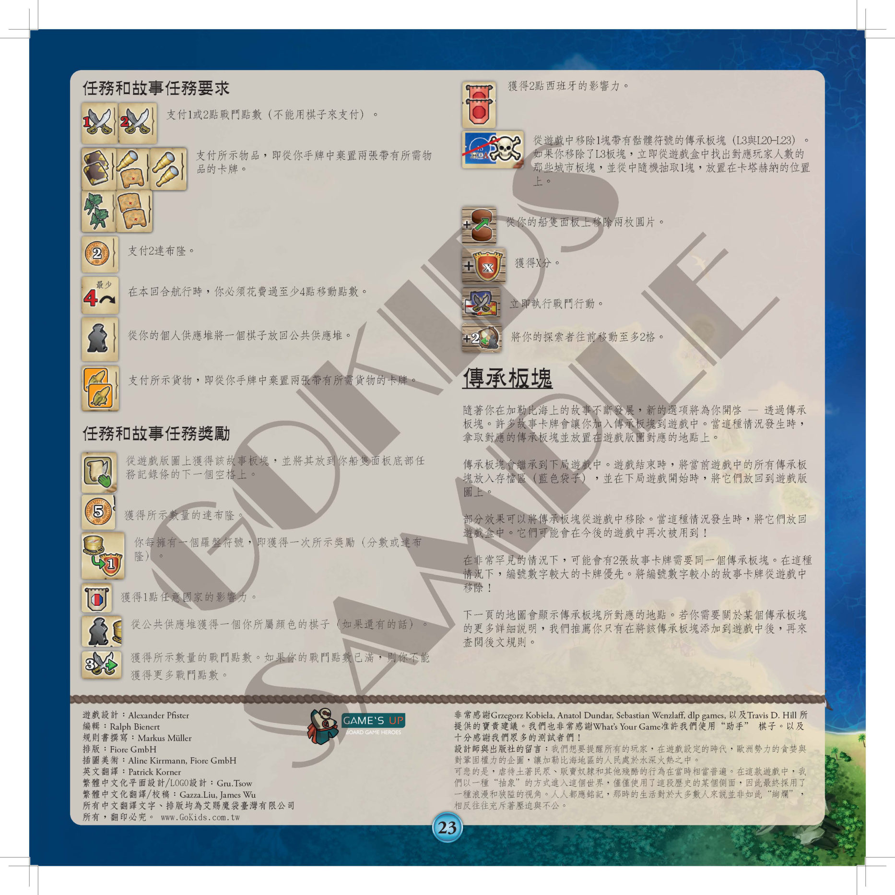
随著你在加勒比海上的故事不断发展，新的选项将为你开启 — 透过传承板块。许多故事卡牌会让你加入传承板块到游戏中。当这种情况发生时，拿取对应的传承板块并放置在游戏版图对应的地点上。
传承板块会继承到下局游戏中。游戏结束时，将当前游戏中的所有传承板块放入存档区（蓝色袋子），并在下局游戏开始时，将它们放回到游戏版图上。
部分效果可以将传承板块从游戏中移除。当这种情况发生时，将它们放回游戏盒中。它们可能会在今后的游戏中再次被用到！
在非常罕见的情况下，可能会有2张故事卡牌需要同一个传承板块。在这种情况下，编号数字较大的卡牌优先。将编号数字较小的故事卡牌从游戏中移除！
下一页的地图会显示传承板块所对应的地点。若你需要关于某个传承板块的更多详细说明，我们推荐你只有在将该传承板块添加到游戏中后，再来查阅后文规则。
〔图 GAME'S UP / BOARD GAME HEROES 标志〕
游戏设计：Alexander Pfister
编辑：Ralph Bienert
规则书撰写：Markus Müller
排版：Fiore GmbH
插图美术：Aline Kirrmann, Fiore GmbH
英文翻译：Patrick Korner
繁体中文化平面设计/LOGO设计：Gru.Tsow
繁体中文化翻译/校稿：Gazza.Liu, James Wu
所有中文翻译文字、排版均为艾赐魔袋台湾有限公司所有，翻印必究。 www.GoKids.com.tw
非常感谢Grzegorz Kobiela, Anatol Dundar, Sebastian Wenzlaff, dlp games, 以及Travis D. Hill 所提供的宝贵建议。我们也非常感谢What's Your Game准许我们使用“助手” 棋子。以及十分感谢我们众多的测试者们！
设计师与出版社的留言：我们想要提醒所有的玩家，在游戏设定的时代，欧洲势力的贪婪与对巩固权力的企图，让加勒比海地区的人民处于水深火热之中。可悲的是，虐待土著民众、贩卖奴隶和其他残酷的行为在当时相当普遍。在这款游戏中，我们以一种“抽象”的方式进入这个世界，仅仅使用了这段历史的某个侧面，因此最终采用了一种浪漫和狭隘的视角。人人都应铭记，那时的生活对于大多数人来说并非如此“绚烂”，相反往往充斥著压迫与不公。
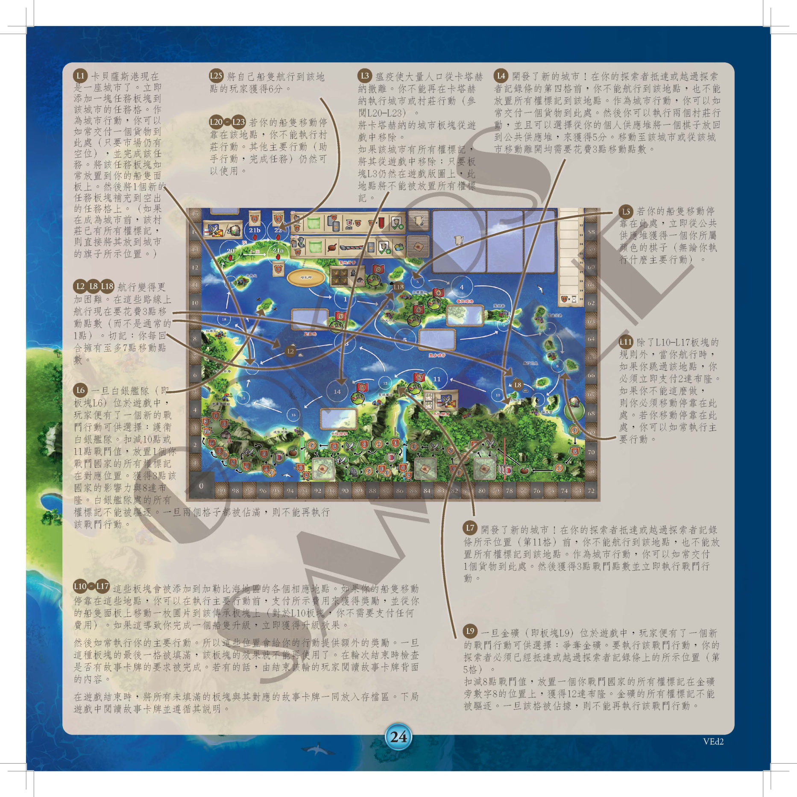
L1 卡贝萨斯港现在是一座城市了。立即添加一块任务板块到该城市的任务格。作为城市行动，你可以如常交付一个货物到此处（只要市场仍有空位），并完成该任务。将该任务板块如常放置到你的船只面板上。然后将1个新的任务板块补充到空出的任务格上。（如果在成为城市前，该村庄已有所有权标记，则直接将其放到城市的旗子所示位置。）
L25 将自己船只航行到该地点的玩家获得6分。
L20-L23 若你的船只移动停靠在该地点，你不能执行村庄行动。其他主要行动（助手行动，完成任务）仍然可以使用。
L3 瘟疫使大量人口从卡塔赫纳撤离。你不能再在卡塔赫纳执行城市或村庄行动（参阅L20-L23）。将卡塔赫纳的城市板块从游戏中移除。如果该城市有所有权标记，将其从游戏中移除；只要板块L3仍然在游戏版图上，此地点将不能被放置所有权标记。
L4 开发了新的城市！在你的探索者抵达或越过探索者记录条的第四格前，你不能航行到该地点，也不能放置所有权标记到该地点。作为城市行动，你可以如常交付一个货物到此处。然后你可以执行两个村庄行动，并且可以选择从你的个人供应堆将一个棋子放回到公共供应堆，来获得5分。移动至该城市或从该城市移动离开均需要花费3点移动点数。
L2 L8 L18 航行变得更加困难。在这些路线上航行现在要花费3点移动点数（而不是通常的1点）。切记：你每回合拥有至多7点移动点数。
L6 一旦白银舰队（即板块L6）位于游戏中，玩家便有了一个新的战斗行动可供选择：护卫白银舰队。扣减10点或11点战斗值，放置1个你战斗国家的所有权标记在对应位置。获得3点该国家的影响力与8达布隆。白银舰队处的所有权标记不能被驱逐。一旦两个格子都被占满，则不能再执行该战斗行动。
L5 若你的船只移动停靠在此处，立即从公共供应堆获得一个你所属颜色的棋子（无论你执行什么主要行动）。
L11 除了L10-L17板块的规则外，当你航行时，如果你跳过该地点，你必须立即支付2达布隆。如果你不能这么做，则你必须移动停靠在此处。若你移动停靠在此处，你可以如常执行主要行动。
〔图 游戏版图全图照片——加勒比海航行路线，含编号白圈航点（如21a/21b）、城市与村庄位置、边缘分数轨（71-99等）与上方各轨表；图上叠加棕色编号圆标（L1、L2、L3、L4、L5、L6、L7、L9、L11、L25、L20-L23、L10-L17、L2 L8 L18）与棕色指引线，对应四周说明文字。版图上印刷的城市名称与细小数字因过小无法辨认，不予转录。〕
L10-L17 这些板块会被添加到加勒比海地区的各个相应地点。如果你的船只移动停靠在这些地点，你可以在执行主要行动前，支付所示费用来获得奖励，并从你的船只面板上移动一枚圆片到该传承板块上（对于L10板块，你不需要支付任何费用）。如果这导致你完成一个船只升级，立即获得升级效果。
然后如常执行你的主要行动。所以这些位置会给你的行动提供额外的奖励。一旦这种板块的最后一格被填满，该板块的效果就不能再使用了。在轮次结束时检查是否有故事卡牌的要求被完成。若有的话，由结束该轮的玩家阅读故事卡牌背面的内容。
在游戏结束时，将所有未填满的板块与其对应的故事卡牌一同放入存档区。下局游戏中阅读故事卡牌并遵循其说明。
L7 开发了新的城市！在你的探索者抵达或越过探索者记录条所示位置（第11格）前，你不能航行到该地点，也不能放置所有权标记到该地点。作为城市行动，你可以如常交付1个货物到此处。然后获得3点战斗点数并立即执行战斗行动。
L9 一旦金矿（即板块L9）位于游戏中，玩家便有了 一个新的战斗行动可供选择：争夺金矿。要执行该战斗行动，你的探索者必须已经抵达或越过探索者记录条上的所示位置（第5格）。
扣减8点战斗值，放置一个你战斗国家的所有权标记在金矿旁数字8的位置上，获得12达布隆。金矿的所有权标记不能被驱逐。一旦该格被占据，则不能再执行该战斗行动。
VEd2